import torch import matplotlib.pyplot as plt # 设置中文字体 plt.rcParams['font.sans-serif'] = ['SimHei'] # 微软雅黑 plt.rcParams['axes.unicode_minus'] = False # 解决负号显示问题 # 设置设备，优先使用顺序：GPU > MPS > CPU DEVICE = torch.device( "cuda" if torch.cuda.is_available() else "mps" if torch.backends.mps.is_available() else "cpu" ) print(f"当前设备：{DEVICE}")
当前设备：cuda
1 Transformer背景
学习目标
- 了解Transformer背景
Transformer 的本质，是用 Attention 重写了序列建模方式。
1.1 Transformer 的提出背景
在 Transformer 出现之前，序列建模主要依赖 RNN 系列模型（LSTM / GRU）。 这类模型存在两个根本问题：
- 时间步循环计算，无法并行计算
- 长距离依赖建模困难，句子越长效果越差
为解决这些问题，Google 在 2017 年提出了 Transformer 架构：
Attention Is All You Need（Vaswani et al., 2017） 论文地址：https://arxiv.org/pdf/1706.03762.pdf
Transformer 不再使用循环结构，而是完全基于 Attention 进行序列建模。
1.2 Transformer 的核心思想
用自注意力（Self-Attention）替代循环结构，直接建模序列中任意位置之间的关系
其关键设计包括：
- Self-Attention：任意位置可直接建立依赖
- 并行计算：整个序列同时处理，训练时实现序列方向的并行
- 位置编码：显式引入顺序信息
1.3 Transformer 的主要优势
相比 LSTM / GRU，Transformer 具有以下优势：
-
非递归结构，支持并行计算
编码和解码过程不依赖前一时刻的隐藏状态，整段序列可同时参与计算，大幅缩短训练时间并提升硬件利用率。 -
依赖路径更短，长距离信息建模能力更强
自注意力让任意两个位置直接交互，信息传递不再受“步数”限制，长句或跨段依赖能被更稳定地捕获。 -
结构统一，易于堆叠和扩展，适合大模型训练
以多头注意力 + 前馈网络为基本模块，堆叠和放大参数规模非常直接，适用于大规模预训练与迁移学习。
下图显示：无 Attention 的 RNN 在长句上性能快速下降，而基于 Attention 的模型保持稳定表现。
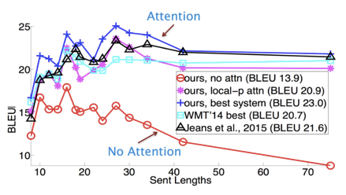
1.4 Transformer 的产业地位
在机器翻译、文本理解、对话系统等任务中， Transformer 已成为工业界与学术界的事实标准。
在 WMT 等权威机器翻译榜单上，排名靠前的模型几乎全部基于 Transformer 架构：
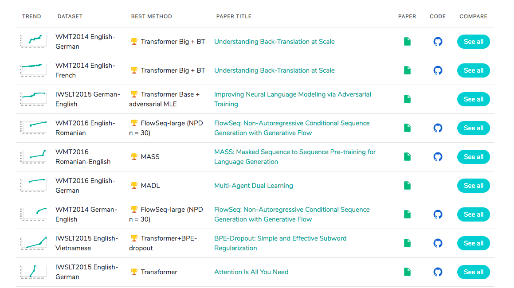
Transformer ≈ 现代 NLP 的基础设施
2 认识Transformer架构
学习目标
- 了解Transformer模型的作用.
- 掌握Transformer总体架构图中各个组成部分的名称.
2.1 Transformer模型的作用
Transformer 是基于 Encoder-Decoder 架构的模型，可以完成： - 机器翻译、文本生成等 NLP 典型任务 - 构建预训练语言模型，支持不同任务的迁移学习
2.2 Transformer总体架构
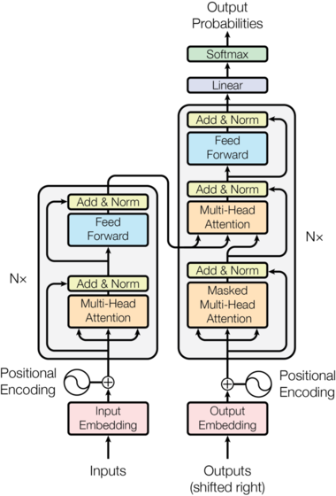
Transformer 由四大部分组成： 1. 输入部分 2. 编码器部分 3. 解码器部分 4. 输出部分
输入部分
包含两组嵌入层与位置编码器： - 源文本嵌入层 + 位置编码器 - 目标文本嵌入层 + 位置编码器
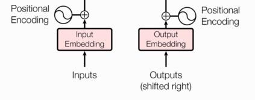
编码器部分
- 由 N 个编码器层堆叠而成
- 每层包含 2 个子层连接结构：
- 多头自注意力 + AddNorm(残差连接 + LayerNorm)
- 前馈网络 + AddNorm(残差连接 + LayerNorm)
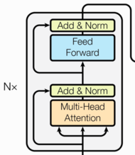
解码器部分
- 由 N 个解码器层堆叠而成
- 每层包含 3 个子层连接结构：
- 多头自注意力（带掩码）+ AddNorm(残差连接 + LayerNorm)
- 多头交叉注意力 + AddNorm(残差连接 + LayerNorm)
- 前馈网络 + AddNorm(残差连接 + LayerNorm)
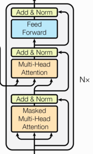
输出部分
- 线性层：将解码器输出映射到词表维度
- Softmax 层：生成概率分布
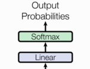
2.3 总结
| 组成部分 | 核心内容 |
|---|---|
| 输入 | 文本嵌入 + 位置编码 |
| 编码器 | N 层 × (多头自注意力 + 前馈网络) |
| 解码器 | N 层 × (掩码自注意力 + 交叉注意力 + 前馈网络) |
| 输出 | 线性层 + Softmax |
Transformer 通过自注意力机制实现并行化序列建模，是现代 NLP 的基础架构
3 输入部分实现
学习目标
- 了解文本嵌入层和位置编码的作用.
- 掌握文本嵌入层和位置编码的实现过程.
3.1 输入部分介绍
输入部分包含:
- 源文本嵌入层及其位置编码器
- 目标文本嵌入层及其位置编码器
3.2 文本嵌入层的作用
- 将文本中词索引转变为向量表示
- 无论是源文本嵌入还是目标文本嵌入，原理相同
3.3 位置编码器的作用
在注意力机制中，没有针对词位置信息的处理。因此需要在Embedding层后加入位置编码器，将词位置信息编码后加入到词嵌入张量中，以弥补位置信息的缺失。
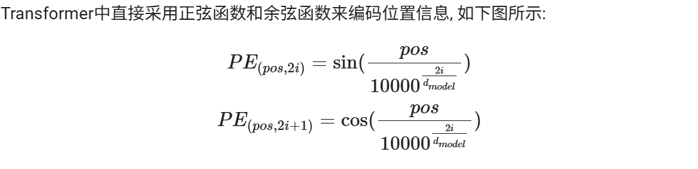
""" 演示 transformer输入部分的 词嵌入层 和 位置编码 输入部分组成： 词嵌入层：把词转为词向量 位置编码：添加序列位置信息到词向量中 需要掌握的: nn.Embedding """ # 导包 import torch import torch.nn as nn import numpy as np import matplotlib.pyplot as plt # 设置中文字体 plt.rcParams['font.sans-serif'] = ['SimHei'] # 微软雅黑 plt.rcParams['axes.unicode_minus'] = False # 解决负号显示问题 # 设置设备 device = torch.device( "cuda" if torch.cuda.is_available() else "mps" if torch.backends.mps.is_available() else "cpu" ) print(f"当前设备：{device}") # 1.定义模型类，实现词嵌入层 - 要求手敲 class MyEmbedding(nn.Module): """ 输入: x: 词索引, (batch_size, seq_len) 输出: x: 词向量, (batch_size, seq_len, d_model) """ # 1.定义__init__方法 def __init__(self, vocab_size, d_model=512): super().__init__() # 1.初始化参数 self.vocab_size = vocab_size self.d_model = d_model # 2.初始化词嵌入层 self.embedding = nn.Embedding(vocab_size, d_model) # 2.forward方法 def forward(self, x): # 输入x: 词索引, (batch_size, seq_len) # 1.传入词嵌入层 x = self.embedding(x) # (batch_size, seq_len, d_model) # 2.进行缩放*d_model**0.5 return x*self.d_model**0.5 # 2.测试词嵌入层 def test_MyEmbedding(): # 1.定义参数 vocab_size = 1000 d_model = 512 batch_size = 2 seq_len = 20 # 2.创建MyEmbedding对象 embedding = MyEmbedding(vocab_size, d_model) # 3.定义张量,模拟输入词索引序列,(batch_size,seq_len) x = torch.randint(0, vocab_size, (batch_size,seq_len)) print(f"输入词索引序列x: \n{x.shape}") # 4.传入词嵌入层 x = embedding(x) # (batch_size, seq_len, d_model) print(f"输出词向量x: \n{x.shape}") # 3.定义模型类,实现位置编码 - 要求手敲 class MyPositionalEncoding(nn.Module): """ 输入: x:词向量,(batch_size,seq_len,d_model) 输出: x:添加位置编码后的词向量,(batch_size,seq_len,d_model) """ # 1.定义__init__方法 def __init__(self, d_model=512, dropout=0.1, max_len=1000): super().__init__() # 1.初始化参数 self.d_model = d_model if dropout is not None: self.dropout = nn.Dropout(dropout) else: # 定义一个恒等层,实现什么都不做, y=x self.dropout = nn.Identity() self.max_len = max_len # 2.定义位置编码,(max_len, d_model) pe = torch.zeros(max_len, d_model) # 3.定义位置编码的索引序列pos,0~max_len-1 pos = torch.arange(0, max_len).unsqueeze(1) # (max_len,1) # 4.定义参数，记录10000^(-2i/d_model) # a^n = exp(log(a))^n = exp(log(a)*n) # 10000^(-2i/d_model) = exp(log(10000)*(-2i/d_model)) div_term = torch.exp(np.log(10000.0)*(-torch.arange(0, d_model, 2) / d_model)) # 5.计算位置编码pe, (max_len, d_model) pe[:, ::2] = torch.sin(pos * div_term) pe[:, 1::2] = torch.cos(pos * div_term) # 6.把2D转为3D, (1,max_len,d_model),后面做张量加法，涉及到广播机制 pe = pe.unsqueeze(0) # 7.将位置编码添加到缓冲区buffer: 不会训练，但必须跟着模型一起保存和移动的变量 self.register_buffer("pe", pe) # 将pe创建为一个self.pe的变量 # 2.forward方法 def forward(self, x): # 输入x: 词向量,(batch_size,seq_len,d_model) # 1.词向量(batch_size,seq_len,d_model) + 位置编码(batch_size,max_len,d_model) x = x + self.pe[:, :x.size(1)] return self.dropout(x) # 4.测试MyPositionalEncoding def test_MyPositionalEncoding(): # 1.定义参数 vocab_size = 1000 d_model = 512 batch_size = 4 seq_len = 20 # 2.创建MyEmbedding对象 embed = MyEmbedding(vocab_size, d_model) # 3.定义变量，模拟输入词索引序列，(batch_size,seq_len) x = torch.randint(0, vocab_size, (batch_size, seq_len)) print(f"输入序列x: {x.shape}") # 4.输入词嵌入网络，得到词向量 x = embed(x) print(f"词向量x: {x.shape}") # 5.定义位置编码层 pos_enc = MyPositionalEncoding(d_model) # 6.输入位置编码器层 x = pos_enc(x) print(f"添加位置编码后的词向量x: {x.shape}") # 5.可视化位置编码pe def show_pe(): # 0.定义参数 d_model = 16 max_len = 1000 seq_len = 100 batch_size = 4 # 1.创建位置编码层 pos_enc = MyPositionalEncoding( d_model=d_model, dropout=0, max_len=max_len ) # 2.创建全零张量，模拟输入词向量，(batch_size,seq_len,d_model) x = torch.zeros(batch_size, seq_len, d_model) # 3.输入位置编码层 y = pos_enc(x) # 4.绘制位置编码曲线 plt.figure(figsize=(12, 6)) embed_range = np.arange(5,8) plt.plot(np.arange(seq_len), y[0,:,embed_range].detach()) plt.legend(["d_model="+str(i) for i in embed_range]) plt.show() # 测试 if __name__ == "__main__": test_MyEmbedding() test_MyPositionalEncoding() show_pe()
当前设备：cuda
输入词索引序列x:
torch.Size([2, 20])
输出词向量x:
torch.Size([2, 20, 512])
输入序列x: torch.Size([4, 20])
词向量x: torch.Size([4, 20, 512])
添加位置编码后的词向量x: torch.Size([4, 20, 512])
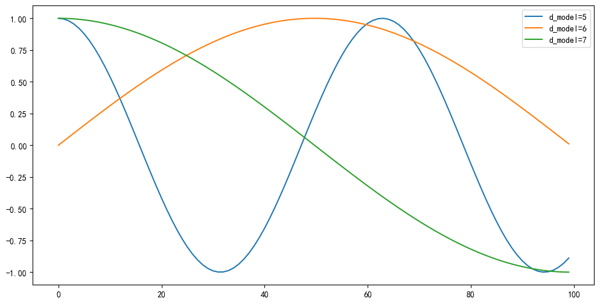
4 掩码张量Mask
学习目标
- 了解掩码（Mask）在 Transformer 中的作用
- 了解 掩码（Mask）的实现原理
4.1 Mask 是什么？（一句话）
Mask 用来在注意力计算中“遮掉”不该被看的位置信息——它决定某个 Query 是否可以关注某个 Key（作用在注意力分数上，而不是直接去掉输入 token）。
4.2 本质与实现要点
- 本质：屏蔽注意力分数（QK^T），通常用 0/1 或布尔矩阵表示。
- 如何实现：在 softmax 前把被屏蔽的位置填入大负值（如 -1e9 或 -inf），使其概率接近 0。 $$ Attention = \operatorname{softmax}!\left(\frac{Q\cdot K^T}{\sqrt{d_k}} + \text{mask}\right)\cdot V $$
4.3 两类常用 Mask
| Mask 类型 | Padding Mask填充掩码 | Causal Mask因果掩码 |
|---|---|---|
| 形状 | (batch_size, seq_len) |
(tgt_seq_len, tgt_seq_len) |
| 目的 | 忽略序列中的 <PAD> 填充位置 |
禁止看到未来 token，保证自回归生成顺序 |
| 何时用 | 所有注意力（Encoder/Decoder 通用） | Decoder 的 Self-Attention（自回归解码） |
| 形式 | 2D布尔向量 | 上三角布尔矩阵（含对角线） |
| 统一语义（bool） | True = 遮掩/ <PAD> False = 可见 / 保留 |
True = 遮掩未来 tokenFalse = 可见 / 保留 |
| PyTorch 示例 | src_key_padding_mask = torch.tensor(...).to(dtype=torch.bool); True 表示 PAD |
tgt_mask = torch.triu(torch.ones(tgt_seq_len, tgt_seq_len), diagonal=1).to(dtype=torch.bool) |
| 应用示例 | 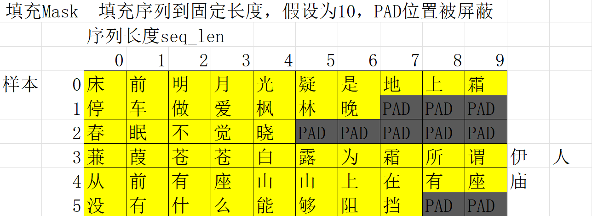 |
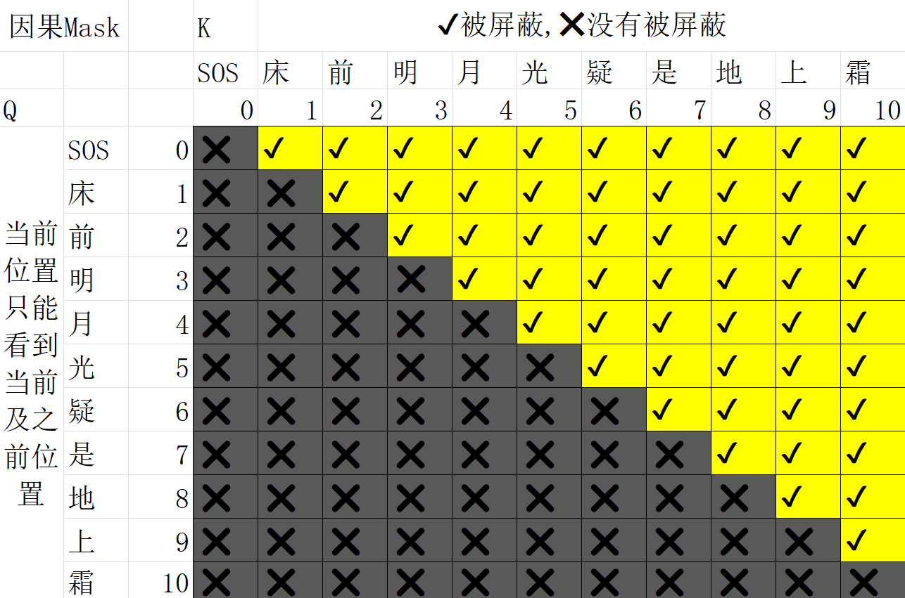 |
4.4 各注意力模块该用哪个 Mask（快捷表）
| 注意力模块 | Padding Mask | Causal Mask |
|---|---|---|
| Encoder Self-Attention | ✔ | ✘ |
| Decoder Self-Attention | ✔ | ✔ |
| Encoder–Decoder Attention | ✔ | ✘ |
4.5 小结
- Mask 不删 token，只屏蔽注意力分数。
- Padding Mask → 屏蔽
<PAD>填充位置；Causal Mask → 禁止看未来。 - 在实现上是把被屏蔽的位置加上大负值，再做 softmax，从而“零化”其注意力权重。
4.6 因果Mask代码实现细节
- mask矩阵初始化为2D矩阵，上三角矩阵，形状(seq_len, seq_len)。
- 在Attention内部统一升维，针对多头注意力，将mask矩阵扩展为(1, 1, seq_len, seq_len)
4.7 transformer_mask
""" 演示两类掩码张量mask(bool类型)： 填充掩码padding_mask: (batch_size, seq_len)，True表示被屏蔽，False表示不被屏蔽 因果掩码causal_mask: (tgt_seq_len, tgt_seq_len), 上三角矩阵，True表示被屏蔽，False表示不被屏蔽 涉及到的API: torch.triu(m,diagonal=1)：生成上三角矩阵,因果掩码causal_mask torch.masked_fill：按掩码替换元素值 plt.matshow：可视化矩阵热力图 需要掌握: torch.triu(m,diagonal=1)：生成上三角矩阵 torch.masked_fill：按掩码替换元素值 """ # 导包 import torch import numpy as np import matplotlib.pyplot as plt # 设置中文字体 plt.rcParams['font.sans-serif'] = ['SimHei'] plt.rcParams['axes.unicode_minus'] = False # 1.定义函数，生成填充掩码张量padding_mask: (batch_size, seq_len) def demo01(): # 0.设置随机种子 torch.manual_seed(4) # 1.定义参数 batch_size = 6 seq_len = 10 # 2.初始化填充掩码张量为全1张量 # padding_mask: (batch_size, seq_len) padding_mask = torch.ones(batch_size, seq_len, dtype=torch.bool) # print(padding_mask) # 3.随机生成填充掩码的有效长度，有效长度内都设置为False lens = torch.randint(5,seq_len+1,(batch_size,)) # for循环来实现有效长度内的填充掩码都设置为False,padding_mask[i,:lens[i]]=False for i in range(batch_size): padding_mask[i, :lens[i]] = False # print(padding_mask) # 4.可视化掩码矩阵 plt.matshow(padding_mask) plt.title("填充掩码矩阵") plt.show() # 2.定义函数，生成因果掩码张量causal_mask: (tgt_seq_len, tgt_seq_len) def demo02(): # 1.定义参数 seq_len = 10 # 2.创建因果掩码张量(seq_len,seq_len) causal_mask = torch.triu(torch.ones(seq_len, seq_len), diagonal=1).to(dtype=torch.bool) # print(torch.ones(seq_len, seq_len)) # print(causal_mask) # 3.可视化因果掩码矩阵 plt.matshow(causal_mask) plt.title("因果掩码矩阵") plt.show() # 3.定义函数，演示masked_fill实现将掩码张量的True替换为-1e9 def demo03(): # 1.创建张量，模拟注意力分数scores = QK^T/sqrt(d_k), (batch_size, tgt_seq_len, src_seq_len) seq_len = 10 batch_size = 2 scores = torch.randn(batch_size, seq_len, seq_len) print(f"原始注意力分数scores:{scores.shape}") # 2.创建掩码张量，因果掩码：(seq_len, seq_len) causal_mask = torch.triu(torch.ones(seq_len, seq_len), diagonal=1).to(dtype=torch.bool) # 3.使用masked_fill函数把掩码张量的True替换为-1e9 scores = torch.masked_fill(scores, causal_mask==True, -1e9) print(f"替换后的注意力分数scores:{scores.shape}") # 4.可视化注意力分数矩阵热力图 plt.matshow(scores[0]) plt.title("注意力分数矩阵") plt.colorbar() plt.show() # 5.可视化注意力权重矩阵热力图 attention_weights = torch.softmax(scores, dim=-1) plt.matshow(attention_weights[0]) plt.title("注意力权重矩阵") plt.colorbar() plt.show() # 测试 if __name__ == '__main__': demo01() demo02() demo03()
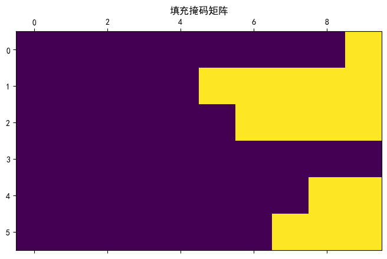
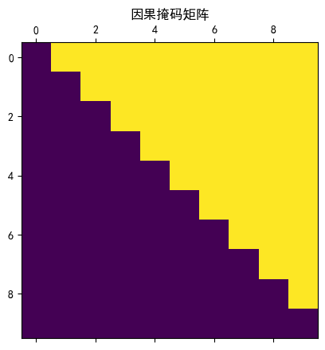
原始注意力分数scores:torch.Size([2, 10, 10])
替换后的注意力分数scores:torch.Size([2, 10, 10])
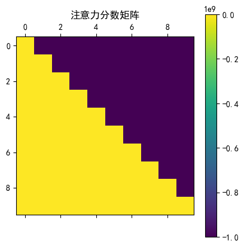
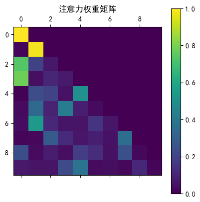
5 编码器部分实现
学习目标
- 了解编码器中各个组成部分的作用.
- 掌握编码器中各个组成部分的实现过程.
5.1 编码器介绍
编码器部分: * 由N个编码器层堆叠而成 * 每个编码器层由两个子层连接结构组成 * 第一个子层连接结构包括一个多头自注意力层和层归一化以及一个残差连接 * 第二个子层连接结构包括一个前馈网络层和层归一化以及一个残差连接
5.2 注意力机制
这里使用的注意力的计算规则: $$ Attention(Q,K,V)=Softmax(\frac{Q\cdot K^T}{\sqrt{d_{k}}})\cdot V $$
- Q: Query，查询，当前“我想关注什么”的表示（当前位置 / 当前词）。
- K: Key，键，所有候选信息的“索引”或“标签”。
- V: Value，值，要被取走、加权融合的信息内容。
结构图为：

""" 演示 transformer 的 Encoder, 实现Encoder编码器各个部分的功能 组成： N层堆叠 Multi-Head Attention 多头自注意力机制 Add & Norm 残差连接 & 层归一化 Feed Forward 前馈网络 Add & Norm 残差连接 & 层归一化 """ # 导包 import torch import torch.nn as nn import torch.nn.functional as F # from transformer_input import MyEmbedding, MyPositionalEncoding import matplotlib.pyplot as plt # 设置中文字体 plt.rcParams['font.sans-serif'] = ['SimHei'] # 微软雅黑 plt.rcParams['axes.unicode_minus'] = False # 解决负号显示问题 # 1.定义Attention类，实现缩放点积注意力机制 class MyAttention(nn.Module): """ Transformer的 缩放点积注意力机制 输入: query/key/value: (batch_size, seq_len, d_model) padding_mask(可选): (batch_size, seq_len),填充掩码，True=被遮蔽/掩码，False=没有被遮蔽 tgt_mask(可选,Decoder专用): (tgt_seq_len, tgt_seq_len),目标序列的填充掩码，防止看到未来/遮蔽未来token，True=被遮蔽/掩码，False=没有被遮蔽 返回: output: (batch_size, seq_len, d_model) attention_weights: (batch_size, seq_len, seq_len) """ # 1.定义__init__方法 def __init__(self, dropout=0.1): super().__init__() # 1.初始化dropout层 if dropout is not None: self.dropout = nn.Dropout(dropout) else: # 定义一个恒等层,实现什么都不做, y=x self.dropout = nn.Identity() # 2.forward方法 def forward(self, query, key, value, padding_mask=None, tgt_mask=None): # query/key/value: (batch_size, seq_len, d_model),(batch_size,num_heads,seq_len,d_head) # 1.获取参数batch_size, seq_len, d_model batch_size = query.shape[0] d_model = query.shape[-1] q_len = query.shape[-2] k_len = key.shape[-2] # 2.计算缩放点积注意力，打分-归一化-加权求和 scores = query @ key.transpose(-2, -1) / d_model**0.5 # 3.处理掩码，填充掩码，因果掩码 # 3.1 处理填充掩码, padding_mask(可选): (batch_size, k_len) if padding_mask is not None: # 1.维度校验 if padding_mask.dim() == 2: # 2.校验形状(batch_size, k_len) assert padding_mask.shape == (batch_size, k_len), f"填充掩码的形状{padding_mask.shape}错误, 需为{(batch_size, k_len)}" # 3.扩展填充掩码为4D,(batch_size, k_len)-> (batch_size, 1, 1, k_len) padding_mask = padding_mask.unsqueeze(1).unsqueeze(2) elif padding_mask.dim() == 3: # 4.扩展填充掩码为4D,(batch_size,*, k_len)-> (batch_size, 1, *, k_len) padding_mask = padding_mask.unsqueeze(1) scores = torch.masked_fill(scores, padding_mask, -1e9) # 3.2 处理因果掩码，tgt_mask(可选,Decoder专用): (q_len, k_len) if tgt_mask is not None: assert tgt_mask.shape == (q_len, k_len), f"因果掩码的形状{tgt_mask.shape}错误, 需为{(q_len, k_len)}" # 扩展因果掩码为4D,(q_len, k_len)-> (1, 1, q_len, k_len) tgt_mask = tgt_mask.unsqueeze(0).unsqueeze(0) scores = torch.masked_fill(scores, tgt_mask, -1e9) # 4.归一化 attention_weights = F.softmax(scores, dim=-1) # 5.加权求和 output = attention_weights @ value return output, attention_weights # 2.测试MyAttention def test_MyAttention(): # 1.定义参数 vocab_size = 1000 d_model = 512 batch_size = 4 seq_len = 10 # 3.定义变量，模拟输入词索引序列，(batch_size,seq_len) x = torch.randint(0, vocab_size, (batch_size, seq_len)) print(f"输入序列x: {x.shape}") # 2.创建MyEmbedding对象 embed = MyEmbedding(vocab_size, d_model) # 4.输入词嵌入网络，得到词向量 x = embed(x) print(f"词向量x: {x.shape}") # 5.定义位置编码层 pos_enc = MyPositionalEncoding(d_model) # 6.输入位置编码器层 x = pos_enc(x) print(f"添加位置编码后的词向量x: {x.shape}") # 7.定义MyAttention对象 attention = MyAttention(dropout=0) # 8.前向传播, 获取输出和注意力权重 query, key, value = x, x, x # 9.没有掩码的前向传播 output, attention_weights = attention(query, key, value) print(f"输出output: {output.shape}") print(f"注意力权重attention_weights: {attention_weights.shape}") # 绘制注意力权重热力图 plt.matshow(attention_weights[0].detach()) plt.title("没有掩码的注意力权重") plt.show() # 10.带掩码的前向传播 # 创建上三角掩码矩阵 tgt_mask = torch.triu(torch.ones(seq_len, seq_len), 1).to(torch.bool) print("有掩码的多头注意力") output_masked, attention_weights_masked = attention( query, key, value, tgt_mask=tgt_mask ) # 绘制带掩码的注意力权重热力图 plt.matshow(attention_weights_masked[0, 0].detach().numpy()) plt.title("有掩码的注意力权重") plt.show() # 主程序入口 if __name__ == '__main__': test_MyAttention()
输入序列x: torch.Size([4, 10])
词向量x: torch.Size([4, 10, 512])
添加位置编码后的词向量x: torch.Size([4, 10, 512])
输出output: torch.Size([4, 10, 512])
注意力权重attention_weights: torch.Size([4, 10, 10])
有掩码的多头注意力
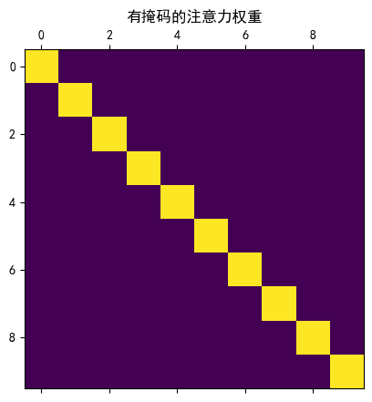
5.3 多头注意力机制
多头注意力机制是什么
让模型“从多个角度同时看同一句话”
多头注意力机制，就是将Q,K,V的特征维度拆分为多个头，然后分别计算注意力，然后合并，最后经过线性变换得到输出。比如特征维度为512，拆分为8个头，每个头维度为64，分别计算注意力，然后合并，经过线性变换，得到最终的输出。

多头注意力的作用？
如果只有一个注意力头：
- 所有信息只能在一个注意力空间中建模
- 容易只关注某一类关系（比如局部或全局）
多头注意力可以：
- 同时关注 不同类型的关系
- 提高模型的 表达能力和稳定性
- 保持计算并行（GPU 友好）
每个头 ≈ 一个不同的“关注视角”
多头注意力的计算过程
假设：
- 特征维度：
d_model = 512 - 头数：
num_heads = 8 - 每个头的维度：
head_dim = 512 / 8 = 64
| 步骤 | 操作 | 输入形状 | 输出形状 | 说明 |
|---|---|---|---|---|
| Step 1 | 线性映射得到 Q、K、V | (batch, seq_len, 512) |
(batch, seq_len, 512) |
通过可学习参数 W_Q, W_K, W_V 进行线性变换：Q = X · W_QK = X · W_KV = X · W_V这一步是真正的学习能力所在 |
| Step 2 | 将Q、K、V拆分为多个头Qi、Ki、Vi, i=0,1,...,7 | (batch, seq_len, 512) |
(batch, 8, seq_len, 64) |
将 Q、K、V 按头数拆分： 从 512 维拆成 8 个 64 维固定切分，不需要学习 |
| Step 3 | 每个头Qi、Ki、Vi独立计算注意力 | (batch, 8, seq_len, 64) |
(batch, 8, seq_len, 64) |
对每个头独立计算：Attention = softmax(Qi · Kiᵀ / √d_k) · Vi各头完全并行、互不干扰 |
| Step 4 | 拼接所有头 | (batch, 8, seq_len, 64) |
(batch, seq_len, 512) |
将 8 个头的输出拼接：Concat(head_1, ..., head_8) |
| Step 5 | 线性变换得到最终输出 | (batch, seq_len, 512) |
(batch, seq_len, 512) |
通过可学习参数 W_O 融合信息：Output = Concat(...) · W_O |
核心要点：
- 学习能力主要来自 Step 1（Q/K/V 投影）和 Step 5（输出投影）
- 多头拆分（Step 2）是固定操作，不涉及参数学习
- 并行计算（Step 3）让模型从多个角度同时关注序列
多头注意力 = 多个视角 × 并行计算 × 信息融合
多头注意力通过多个并行的注意力头，在不同子空间中同时建模不同关系，从而提升模型的表达能力；工程上采用均匀切分 + 可学习投影，是效果与效率的最佳平衡。
""" 演示 transformer 的 Encoder, 实现Encoder编码器各个部分的功能 组成： N层堆叠 Multi-Head Attention 多头自注意力机制 Add & Norm 残差连接 & 层归一化 Feed Forward 前馈网络 Add & Norm 残差连接 & 层归一化 """ # 导包 import torch import torch.nn as nn import torch.nn.functional as F # from transformer_input import MyEmbedding, MyPositionalEncoding import matplotlib.pyplot as plt # 设置中文字体 plt.rcParams['font.sans-serif'] = ['SimHei'] # 微软雅黑 plt.rcParams['axes.unicode_minus'] = False # 解决负号显示问题 # 1.定义Attention类，实现缩放点积注意力机制 class MyAttention(nn.Module): """ Transformer的 缩放点积注意力机制 输入: query/key/value: (batch_size, seq_len, d_model) padding_mask(可选): (batch_size, seq_len),填充掩码，True=被遮蔽/掩码，False=没有被遮蔽 tgt_mask(可选,Decoder专用): (tgt_seq_len, tgt_seq_len),目标序列的填充掩码，防止看到未来/遮蔽未来token，True=被遮蔽/掩码，False=没有被遮蔽 返回: output: (batch_size, seq_len, d_model) attention_weights: (batch_size, seq_len, seq_len) """ # 1.定义__init__方法 def __init__(self, dropout=0.1): super().__init__() # 1.初始化dropout层 if dropout is not None: self.dropout = nn.Dropout(dropout) else: # 定义一个恒等层,实现什么都不做, y=x self.dropout = nn.Identity() # 2.forward方法 def forward(self, query, key, value, padding_mask=None, tgt_mask=None): # query/key/value: (batch_size, seq_len, d_model),(batch_size,num_heads,seq_len,d_head) # 1.获取参数batch_size, seq_len, d_model batch_size = query.shape[0] d_model = query.shape[-1] q_len = query.shape[-2] k_len = key.shape[-2] # 2.计算缩放点积注意力，打分-归一化-加权求和 scores = query @ key.transpose(-2, -1) / d_model**0.5 # 3.处理掩码，填充掩码，因果掩码 # 3.1 处理填充掩码, padding_mask(可选): (batch_size, k_len) if padding_mask is not None: # 1.维度校验 if padding_mask.dim() == 2: # 2.校验形状(batch_size, k_len) assert padding_mask.shape == (batch_size, k_len), f"填充掩码的形状{padding_mask.shape}错误, 需为{(batch_size, k_len)}" # 3.扩展填充掩码为4D,(batch_size, k_len)-> (batch_size, 1, 1, k_len) padding_mask = padding_mask.unsqueeze(1).unsqueeze(2) elif padding_mask.dim() == 3: # 4.扩展填充掩码为4D,(batch_size,*, k_len)-> (batch_size, 1, *, k_len) padding_mask = padding_mask.unsqueeze(1) scores = torch.masked_fill(scores, padding_mask, -1e9) # 3.2 处理因果掩码，tgt_mask(可选,Decoder专用): (q_len, k_len) if tgt_mask is not None: assert tgt_mask.shape == (q_len, k_len), f"因果掩码的形状{tgt_mask.shape}错误, 需为{(q_len, k_len)}" # 扩展因果掩码为4D,(q_len, k_len)-> (1, 1, q_len, k_len) tgt_mask = tgt_mask.unsqueeze(0).unsqueeze(0) scores = torch.masked_fill(scores, tgt_mask, -1e9) # 4.归一化 attention_weights = F.softmax(scores, dim=-1) # 5.加权求和 output = attention_weights @ value return output, attention_weights # 2.测试MyAttention def test_MyAttention(): # 1.定义参数 vocab_size = 1000 d_model = 512 batch_size = 4 seq_len = 10 # 2.创建MyEmbedding对象 embed = MyEmbedding(vocab_size, d_model) # 3.定义变量，模拟输入词索引序列，(batch_size,seq_len) x = torch.randint(0, vocab_size, (batch_size, seq_len)) print(f"输入序列x: {x.shape}") # 4.输入词嵌入网络，得到词向量 x = embed(x) print(f"词向量x: {x.shape}") # 5.定义位置编码层 pos_enc = MyPositionalEncoding(d_model) # 6.输入位置编码器层 x = pos_enc(x) print(f"添加位置编码后的词向量x: {x.shape}") # 7.创建MyAttention对象 attention = MyAttention(dropout=0) # 8.前向传播，没有掩码的前向传播 query, key, value = x, x, x output, attention_weights = attention(query, key, value) # output: (batch_size, seq_len, d_model) # attention_weights: (batch_size, seq_len, seq_len) print(f"输出output: {output.shape}") print(f"注意力权重attention_weights: {attention_weights.shape}") # print(f"注意力权重attention_weights: {attention_weights}") # 绘制注意力权重热力图 plt.matshow(attention_weights[0].detach()) plt.title("没有掩码的注意力权重") plt.show() # 9.添加因果掩码的前向传播 tgt_mask = torch.triu(torch.ones(seq_len, seq_len), diagonal=1).to(dtype=torch.bool) output, attention_weights = attention( query, key, value, tgt_mask=tgt_mask ) # output: (batch_size, seq_len, d_model) # attention_weights: (batch_size, seq_len, seq_len) print(f"输出output: {output.shape}") print(f"注意力权重attention_weights: {attention_weights.shape}") print(f"注意力权重attention_weights[0,0]: {attention_weights[0,0].shape}") # print(f"注意力权重attention_weights: {attention_weights}") # 绘制注意力权重热力图 plt.matshow(attention_weights[0,0].detach()) plt.title("有掩码的注意力权重") plt.show() print("-" * 40) # 3.定义多头注意力机制类 class MyMultiHeadAttention(nn.Module): """ 参数： d_model: QKV的特征维度，通常为512,1024,2048 num_heads: 多头注意力的头数，通常为8,16, 要满足整除关系，d_model % num_heads == 0 dropout: 可选，默认0.1 输入: query/key/value: (batch_size, seq_len, d_model) padding_mask(可选): (batch_size, seq_len),填充掩码，True=被遮蔽/掩码，False=没有被遮蔽 tgt_mask(可选,Decoder专用): (tgt_seq_len, tgt_seq_len),目标序列的填充掩码，防止看到未来/遮蔽未来token，True=被遮蔽/掩码，False=没有被遮蔽 返回: output: (batch_size, seq_len, d_model) attention_weights: (batch_size, seq_len, seq_len) """ # 1.定义__init_方法 def __init__(self, d_model=512, num_heads=8, dropout=0.1): super().__init__() # 1.初始化参数 self.d_model = d_model self.num_heads = num_heads # 2.校验整数关系：d_model % num_heads == 0 assert d_model % num_heads == 0, f"d_model={d_model}不能被num_heads={num_heads}整除!" self.d_head = d_model // num_heads # 3.定义线性层，4个线性层，query/key/value/output self.linear_q = nn.Linear(d_model, d_model) self.linear_k = nn.Linear(d_model, d_model) self.linear_v = nn.Linear(d_model, d_model) self.linear_out = nn.Linear(d_model, d_model) # 4.定义缩放点积注意力机制 self.attention = MyAttention(dropout=dropout) self.attention_weights = None # 用于可视化注意力权重矩阵 # 2.forward方法 def forward(self, query, key, value, padding_mask=None, tgt_mask=None): # query/key/value: (batch_size, seq_len, d_model) # 0.获取batch_size batch_size = query.shape[0] # 1.经过线性层得到新的QKV query = self.linear_q(query) # (batch_size, seq_len, d_model) key = self.linear_k(key) # (batch_size, seq_len, d_model) value = self.linear_v(value) # (batch_size, seq_len, d_model) # 2.拆分QKV为多个头 # BSD(batch_size,seq_len,d_model) -> BSNH -> BNSH(batch_size,num_heads,seq_len,d_head) query = query.view(batch_size, -1, self.num_heads, self.d_head).transpose(1, 2) # BNSH key = key.view(batch_size, -1, self.num_heads, self.d_head).transpose(1, 2) # BNSH value = value.view(batch_size, -1, self.num_heads, self.d_head).transpose(1, 2) # BNSH # 3.计算每个头的注意力 output, self.attention_weights = self.attention( query, key, value, padding_mask=padding_mask, tgt_mask=tgt_mask ) # output: BNSH(batch_size,num_heads,seq_len,d_head) # attention_weights: BNSS(batch_size,num_heads,seq_len,seq_len) # 4.拼接所有头输出 # BNSH -> BSNH -> BSD(batch_size,seq_len,d_model) output = output.transpose(1, 2).reshape(batch_size, -1, self.d_model) # BSD(batch_size,seq_len,d_model) # 5.经过线性层 output = self.linear_out(output) return output, self.attention_weights # 4.测试MyMultiHeadAttention def test_MyMultiHeadAttention(): # 1.定义参数 vocab_size = 1000 d_model = 512 batch_size = 4 seq_len = 10 # 2.创建MyEmbedding对象 embed = MyEmbedding(vocab_size, d_model) # 3.定义变量，模拟输入词索引序列，(batch_size,seq_len) x = torch.randint(0, vocab_size, (batch_size, seq_len)) print(f"输入序列x: {x.shape}") # 4.输入词嵌入网络，得到词向量 x = embed(x) print(f"词向量x: {x.shape}") # 5.定义位置编码层 pos_enc = MyPositionalEncoding(d_model) # 6.输入位置编码器层 x = pos_enc(x) print(f"添加位置编码后的词向量x: {x.shape}") # 7.创建MyMultiHeadAttention对象 attention = MyMultiHeadAttention(dropout=0) # 8.前向传播，没有掩码的前向传播 query, key, value = x, x, x output, attention_weights = attention(query, key, value) # output: (batch_size, seq_len, d_model) # attention_weights: (batch_size, seq_len, seq_len) print(f"输出output: {output.shape}") print(f"注意力权重attention_weights: {attention_weights.shape}") # print(f"注意力权重attention_weights: {attention_weights}") # 绘制注意力权重热力图 plt.matshow(attention_weights[0,0].detach()) plt.title("没有掩码的多头注意力权重") plt.show() # 9.添加因果掩码的前向传播 tgt_mask = torch.triu(torch.ones(seq_len, seq_len), diagonal=1).to(dtype=torch.bool) output, attention_weights = attention( query, key, value, tgt_mask=tgt_mask ) # output: (batch_size, seq_len, d_model) # attention_weights: (batch_size, seq_len, seq_len) print(f"输出output: {output.shape}") print(f"注意力权重attention_weights: {attention_weights.shape}") print(f"注意力权重attention_weights[0,0]: {attention_weights[0,0].shape}") # print(f"注意力权重attention_weights: {attention_weights}") # 绘制注意力权重热力图 plt.matshow(attention_weights[0,0].detach()) plt.title("有掩码的多头注意力权重") plt.show() print("-" * 40) # 测试 if __name__ == '__main__': test_MyAttention() test_MyMultiHeadAttention()
输入序列x: torch.Size([4, 10])
词向量x: torch.Size([4, 10, 512])
添加位置编码后的词向量x: torch.Size([4, 10, 512])
输出output: torch.Size([4, 10, 512])
注意力权重attention_weights: torch.Size([4, 10, 10])
输出output: torch.Size([1, 4, 10, 512])
注意力权重attention_weights: torch.Size([1, 4, 10, 10])
注意力权重attention_weights[0,0]: torch.Size([10, 10])
----------------------------------------
输入序列x: torch.Size([4, 10])
词向量x: torch.Size([4, 10, 512])
添加位置编码后的词向量x: torch.Size([4, 10, 512])
输出output: torch.Size([4, 10, 512])
注意力权重attention_weights: torch.Size([4, 8, 10, 10])
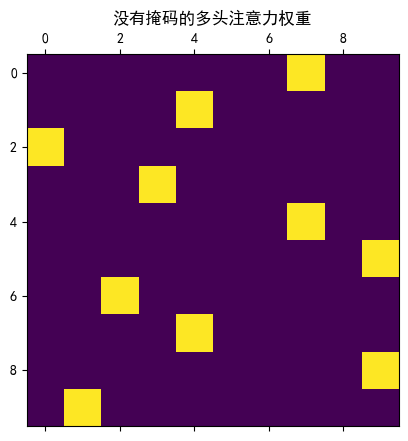
输出output: torch.Size([4, 10, 512])
注意力权重attention_weights: torch.Size([4, 8, 10, 10])
注意力权重attention_weights[0,0]: torch.Size([10, 10])
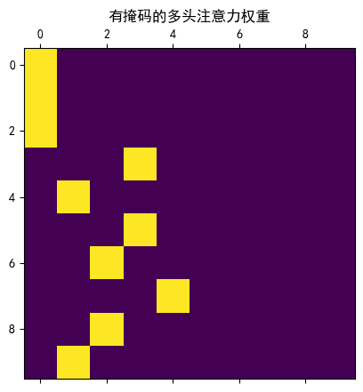
----------------------------------------
总结
-
核心概念：多头注意力机制将输入词向量分割成多个部分，每个头独立进行注意力计算，最后合并结果。
-
主要优势：
- 每个头关注输入的不同特征子空间
- 减少单一注意力机制的偏差
- 增强模型表达能力
-
关键实现：
MultiHeadedAttention类：- 初始化参数：h（头数）、d_model（嵌入维度）、dropout（随机失活概率）
- 输入：Q、K、V和填充掩码padding_mask、因果掩码tgt_mask
- 输出：多头注意力处理后的特征表示
5.4 前馈网络层
- 一般是具有两层线性层的全连接网络.
- 作用:
- 非线性变换，提高模型表达能力
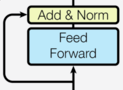
""" 演示 transformer 的 Encoder, 实现Encoder编码器各个部分的功能 组成： N层堆叠 Multi-Head Attention 多头自注意力机制 Add & Norm 残差连接 & 层归一化 Feed Forward 前馈网络 Add & Norm 残差连接 & 层归一化 """ # 导包 import torch import torch.nn as nn import torch.nn.functional as F # from transformer_input import MyEmbedding, MyPositionalEncoding import matplotlib.pyplot as plt # 设置中文字体 plt.rcParams['font.sans-serif'] = ['SimHei'] # 微软雅黑 plt.rcParams['axes.unicode_minus'] = False # 解决负号显示问题 # 5.定义前馈神经网络类 class MyFeedForward(nn.Module): """ 参数： d_model:特征维度，需要与MultiHeadAttention中保持一致 d_ff: 中间层特征维度,自定义 dropout: 可选，默认为0.1 输入： x: (batch_size, seq_len, d_model) 返回： output: (batch_size, seq_len, d_model) """ # 1.定义__init__方法 def __init__(self, d_model=512, d_ff=2048, dropout=0.1): super().__init__() # 1.初始化参数 self.d_model = d_model self.d_ff = d_ff if dropout is not None: self.dropout = nn.Dropout(dropout) else: # 定义一个恒等层,实现什么都不做, y=x self.dropout = nn.Identity() # 2.初始化线性层 self.linear1 = nn.Linear(d_model, d_ff) self.linear2 = nn.Linear(d_ff, d_model) # 2.forward方法 def forward(self, x): # 输入x: (batch_size, seq_len, d_model), 注意力机制的输出 # 1.经过线性层1+relu x = F.relu(self.linear1(x)) # 2.经过dropout x = self.dropout(x) # 3.经过线性层2 x = self.linear2(x) return x # 6.测试前馈神经网络层MyFeedForward def test_MyFeedForward(): # 1.初始化参数 batch_size = 4 seq_len = 10 d_model = 512 d_ff = 2048 # 2.创建输入数据，BSD x = torch.randn(batch_size, seq_len, d_model) print(f"输入数据x: {x.shape}") # 3.创建前馈神经网络层 model = MyFeedForward(d_model, d_ff) # 4.前向传播 output = model(x) print(f"输出output: {output.shape}") print("-" * 40) # 测试 if __name__ == '__main__': # test_MyAttention() # test_MyMultiHeadAttention() test_MyFeedForward()
输入数据x: torch.Size([4, 10, 512])
输出output: torch.Size([4, 10, 512])
----------------------------------------
总结
- 前馈网络层本质：两层线性层的 全连接网络。
- 作用：在注意力后增加非线性变换，提升模型表达能力。
- 实现类
PositionwiseFeedForward：- 参数：
d_model（嵌入维度）、d_ff（隐藏维度）、dropout。 - 输入：上一层输出
x。 - 输出：两层线性+激活后的特征表示。
- 参数：
5.5 层归一化
LayerNorm 实现原理： 对每个样本的特征进行独立的标准化，公式为：$$y = \gamma \cdot \frac{x - \mu}{\sqrt{\sigma^2 + \epsilon}} + \beta$$
层归一化的作用
- 解决内部协变量偏移：随着网络深度增加，各层输入数据的分布会发生变化，导致学习困难
- 加速训练：将数据规范化到合理范围，使梯度更稳定，收敛更快
- 提高模型泛化能力：减少对初始权值的依赖
层归一化的代码实现
""" 演示 transformer 的 Encoder, 实现Encoder编码器各个部分的功能 组成： N层堆叠 Multi-Head Attention 多头自注意力机制 Add & Norm 残差连接 & 层归一化 Feed Forward 前馈网络 Add & Norm 残差连接 & 层归一化 """ # 导包 import torch import torch.nn as nn import torch.nn.functional as F # from transformer_input import MyEmbedding, MyPositionalEncoding import matplotlib.pyplot as plt # 设置中文字体 plt.rcParams['font.sans-serif'] = ['SimHei'] # 微软雅黑 plt.rcParams['axes.unicode_minus'] = False # 解决负号显示问题 # 7.定义层归一化类 class MyLayerNorm(nn.Module): # 1.初始化方法 def __init__(self, normalized_shape, eps=1e-6): super().__init__() # 初始化参数 self.eps = eps self.normalized_shape = normalized_shape # 初始化可学习参数 # 缩放系数初始化为1 self.gamma = nn.Parameter(torch.ones(normalized_shape)) # 偏置系数初始化为0 self.beta = nn.Parameter(torch.zeros(normalized_shape)) # 2.forward方法 def forward(self, x): # 输入x: (batch_size, seq_len, d_model) # 1.计算最后一个轴的均值和标准差 mean = torch.mean(x,-1, keepdim=True) # (batch_size, seq_len, 1) std = torch.std(x,-1, keepdim=True) # (batch_size, seq_len, 1) # 2.进行标准化处理 x = (x - mean) / (std**2 + self.eps)**0.5 # 3.进行缩放和偏移 x = self.gamma * x + self.beta return x # 8.测试层归一化类 def test_MyLayerNorm(): # 0.定义参数 batch_size = 1 seq_len = 5 d_model = 512 # 1.创建输入数据，(batch_size,seq_len,d_model) x = torch.randn(batch_size, seq_len, d_model) print(f"输入数据x.shape: {x.shape}") # 2.创建层归一化层 my_layer_norm = MyLayerNorm(normalized_shape=d_model) # 3.前向传播 output = my_layer_norm(x) print(f"输出数据output.shape: {output.shape}") print("-" * 40) # 测试 if __name__ == '__main__': # test_MyAttention() # test_MyMultiHeadAttention() # test_MyFeedForward() test_MyLayerNorm()
输入数据x.shape: torch.Size([1, 5, 512])
输出数据output.shape: torch.Size([1, 5, 512])
----------------------------------------
5.6 子层连接结构
-
子层连接结构将注意力机制或前馈网络与层归一化和残差连接组合在一起
-
编码器的每层包含两个子层连接结构：第一个用于多头自注意力，第二个用于前馈网络
- 子层连接结构图:
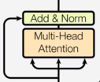
- 组成：sublayer(注意力或前馈), Dropout, Add, LayerNorm
主流顺序: LayerNorm → Sublayer → Dropout → Add
""" 演示 transformer编码器的 两个子层 编码器子层1： Multi-Head Attention(多头注意力机制) Add & Norm(残差连接 + 层归一化) 编码器子层2： FeedForward(前馈网络层) Add & Norm(残差连接 + 层归一化) 需要掌握的: 1.model(x, my_attention) 2.lambda """ # 导包 import torch import torch.nn as nn import torch.nn.functional as F # from transformer_encoder_element import * # 1.定义模型类，实现子层连接结构 class MySublayerConnection(nn.Module): """ 实现transformer中的子层连接结构，子层对象(多头注意力机制/前馈网络层) + AddNorm """ # 1.定义__init__方法 def __init__(self, d_model, dropout=0.1): super().__init__() # 1.初始化参数 self.d_model = d_model # 2.初始化LayerNorm层 self.layer_norm = MyLayerNorm(normalized_shape=d_model) # 3.dropout层 if dropout is not None: self.dropout = nn.Dropout(dropout) else: self.dropout = nn.Identity() # 2.forward方法 def forward(self, x, sublayer): # 子层连接中组件的顺序SDAL: sublayer - dropout - Add - LayerNorm # 实际工业实现LSDA: LayerNorm - sublayer - dropout - Add return self.dropout(sublayer(self.layer_norm(x))) + x # 2.定义函数，测试MySublayerConnection def test_MySublayerConnection(): # 1.定义参数 d_model = 512 batch_size = 4 seq_len = 10 num_heads = 8 d_ff = 2048 # 2.创建张量,BSD x = torch.randn(batch_size, seq_len, d_model) print(f"输入张量x: {x.shape}") # 3.创建MySublayerConnection对象 model = MySublayerConnection(d_model=d_model) # 4.前向传播，需要创建sublayer # 思路1: 函数对象传参 # 多头注意力机制子层的前向传播 # def my_attention(x): # return MyMultiHeadAttention(d_model=d_model, num_heads=num_heads)(x, x, x)[0] # output = model(x, my_attention) # 思路2: lambda函数传参 output = model(x, lambda x: MyMultiHeadAttention(d_model=d_model, num_heads=num_heads)(x, x, x)[0]) print(f"输出张量output: {output.shape}") # (4, 10, 512) # 5.前馈网络层的前向传播 # def my_feed_forward(x): # return MyFeedForward(d_model=d_model, d_ff=d_ff)(x) output = model(x, lambda x: MyFeedForward(d_model=d_model, d_ff=d_ff)(x)) print(f"输出张量output: {output.shape}") # (4, 10, 512) # 测试 if __name__ == "__main__": test_MySublayerConnection()
输入张量x: torch.Size([4, 10, 512])
输出张量output: torch.Size([4, 10, 512])
输出张量output: torch.Size([4, 10, 512])
5.7 编码器层
-
编码器由N个编码器层堆叠而成
-
每个编码器层完成一次对输入的特征提取过程, 即编码过程.
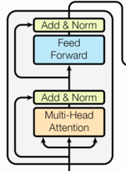
""" 演示 transformer的encoder层，编码器层 组成: 编码器层1： 编码器子层1：LSDA Multi-Head Attention(多头注意力机制) Add & Norm(残差连接 + 层归一化) 编码器子层2： FeedForward(前馈网络层) Add & Norm(残差连接 + 层归一化) 编码器层2 ... 编码器层8 LayerNorm(工程上在编码器最后添加了LN,原论文中编码器最后没有LN) 数据流: 输入数据source:BS -> 词向量x: BSD -> x: BSD """ # 导包 import torch import torch.nn as nn import torch.nn.functional as F # from transformer_input import * # from transformer_encoder_element import * # from transformer_sublayer import * # 1.定义模型类，实现transformer encoder层 class MyTransformerEncoderLayer(nn.Module): """ transformer encoder层 输入: x: 添加了位置编码的词向量,(batch_size,src_seq_len,d_model) padding_mask: 填充掩码,(batch_size,src_seq_len) 输出: x: Encoder编码后的词向量,(batch_size,src_seq_len,d_model) """ # 1.定义__init__方法 def __init__(self,d_model=512,num_heads=8,d_ff=2048,dropout=0.1): super().__init__() # 1.初始化参数 self.d_model = d_model self.num_heads = num_heads self.d_ff = d_ff # 初始化dropout层 if dropout is not None: self.dropout = nn.Dropout(dropout) else: # 定义一个恒等层,实现什么都不做, y=x self.dropout = nn.Identity() # 2.定义多头注意力层 self.multi_head_attention = MyMultiHeadAttention( d_model=d_model, num_heads=num_heads, dropout=dropout ) # 3.定义前馈网络层 self.feed_forward = MyFeedForward( d_model=d_model, d_ff=d_ff, dropout=dropout ) # 4.定义子层连接 self.sublayer1 = MySublayerConnection( d_model=d_model, dropout=dropout ) self.sublayer2 = MySublayerConnection( d_model=d_model, dropout=dropout ) # 2.forward方法 def forward(self, x, padding_mask=None): # 输入x: (batch_size,src_seq_len,d_model) # 1.经过子层1 x = self.sublayer1( x, lambda x: self.multi_head_attention( x, x, x, padding_mask=padding_mask)[0] ) # 2.经过子层2 x = self.sublayer2( x, lambda x: self.feed_forward(x) ) return x # 2.定义函数，测试MyTransformerEncoderLayer def test_MyTransformerEncoderLayer(): # 1.定义参数 d_model = 512 batch_size = 4 seq_len = 10 num_heads = 8 d_ff = 2048 # 2.创建张量,BSD x = torch.randn(batch_size, seq_len, d_model) print(f"输入张量x: {x.shape}") # 3.创建MyTransformerEncoderLayer对象 encoder_layer = MyTransformerEncoderLayer( d_model=d_model, num_heads=num_heads, d_ff=d_ff, dropout=0.1 ) # 4.创建掩码矩阵，填充掩码 padding_mask = torch.ones(batch_size, seq_len, dtype=torch.bool) # print(padding_mask) # 随机生成填充掩码的有效长度，有效长度内都设置为False lens = torch.randint(5, seq_len + 1, (batch_size,)) # for循环来实现有效长度内的填充掩码都设置为False,padding_mask[i,:lens[i]]=False for i in range(batch_size): padding_mask[i, :lens[i]] = False print(f"填充掩码padding_mask: {padding_mask}") # 5.前向传播 output = encoder_layer(x,padding_mask=padding_mask) print(f"输出张量output: {output.shape}") # (batch_size,seq_len,d_model) # 测试 if __name__ == "__main__": test_MyTransformerEncoderLayer()
输入张量x: torch.Size([4, 10, 512])
填充掩码padding_mask: tensor([[False, False, False, False, False, False, False, False, True, True],
[False, False, False, False, False, False, False, False, False, True],
[False, False, False, False, False, False, False, False, False, True],
[False, False, False, False, False, False, False, False, True, True]])
输出张量output: torch.Size([4, 10, 512])
5.8 编码器
- 编码器用于对输入进行特征提取, 也称为编码, 由N个编码器层堆叠而成.
- 组成：
- N层编码器层
- 子层1：多头注意力 + Add&Norm
- 子层2：前馈网络 + Add&Norm
- LayerNorm层归一化
- N层编码器层
""" 演示 transformer的编码器encoder 组成: N个编码器层堆叠： 子层1：多头注意力机制 + Add&Norm 子层2：前馈网络 + Add&Norm LayerNorm(工程上在编码器最后添加了LN,原论文中编码器最后没有LN) """ # 导包 import torch import torch.nn as nn import torch.nn.functional as F # from transformer_encoder_layer import * # 1.定义模型类，实现完整的transformer encoder class MyTransformerEncoder(nn.Module): """ 实现transformer的encoder编码器，就是N个编码器层堆叠 + LayerNorm 输入: x: (batch_size, src_seq_len, d_model),添加位置编码的词向量 padding_mask: (batch_size, src_seq_len),源序列的填充掩码 输出: encoder_output: (batch_size, src_seq_len, d_model),编码器的输出 """ # 1.定义__init__方法 def __init__(self, d_model=512, num_heads=8, d_ff=2048, num_layers=6, dropout=0.1): super().__init__() # 1.初始化参数 self.d_model = d_model self.num_heads = num_heads self.d_ff = d_ff self.num_layers = num_layers if dropout is not None: self.dropout = nn.Dropout(dropout) else: self.dropout = nn.Identity() # 创建一个恒等层，就是y=x # 2.创建网络层 # 使用nn.ModuleList来封装N个编码器层 # 注册子模块参数，支持设备迁移/反向传播/模型保存 self.encoder_layers = nn.ModuleList( [MyTransformerEncoderLayer(d_model, num_heads, d_ff, dropout) for _ in range(num_layers)] ) # 3.创建层归一化 self.layer_norm = MyLayerNorm(d_model) # 2.forward方法 def forward(self, x, padding_mask=None): # x: (batch_size, src_seq_len, d_model), 添加位置编码的词向量 # padding_mask: (batch_size, src_seq_len), 源序列的填充掩码 # 1.经过N个编码器层 for encoder_layer in self.encoder_layers: x = encoder_layer(x, padding_mask) # 2.经过层归一化 x = self.layer_norm(x) return x # 2.定义函数，测试MyTransformerEncoder def test_MyTransformerEncoder(): # 1.定义参数 batch_size = 4 seq_len = 10 d_model = 512 num_heads = 8 d_ff = 2048 dropout = 0.1 num_layers = 6 # 2.创建MyTransformerEncoder对象 model = MyTransformerEncoder( d_model, num_heads, d_ff, num_layers, dropout ) # 3.创建张量，模拟输入数据，BSD x = torch.randn(batch_size, seq_len, d_model)*1000 print(f"输入张量x: {x.shape}") # print(f"输入张量x: {x[0,0]}") # 4.创建填充掩码padding_mask # padding_mask: (batch_size, seq_len) padding_mask = torch.ones(batch_size, seq_len, dtype=torch.bool) # print(padding_mask) # 随机生成填充掩码的有效长度，有效长度内都设置为False lens = torch.randint(5, seq_len + 1, (batch_size,)) # for循环来实现有效长度内的填充掩码都设置为False,padding_mask[i,:lens[i]]=False for i in range(batch_size): padding_mask[i, :lens[i]] = False print(f"填充掩码padding_mask: {padding_mask.shape}") # 5.输入编码器，前向传播 encoder_output = model(x, padding_mask) print(f"编码器的输出encoder_output: {encoder_output.shape}") # print(f"编码器的输出encoder_output: {encoder_output[0,0]}") # 测试 if __name__ == '__main__': test_MyTransformerEncoder()
输入张量x: torch.Size([4, 10, 512])
填充掩码padding_mask: torch.Size([4, 10])
编码器的输出encoder_output: torch.Size([4, 10, 512])
6 解码器部分实现
学习目标
- 了解解码器中各个组成部分的作用.
- 掌握解码器中各个组成部分的实现过程.
6.1 解码器介绍
解码器部分:
- 由N个解码器层堆叠而成
- 每个解码器层由三个子层连接结构组成
- 一个多头自注意力层 + 层归一化&残差连接
- 一个多头注意力层 + 层归一化&残差连接
- 一个前馈网络层 + 层归一化&残差连接
- 注意：主流工程实现，通常在N个解码器层之后，添加一个LayerNorm层
- 说明:
- 解码器层中的各个部分，都与编码器中的实现相同. 可以直接拿来构建解码器层.
6.2 解码器层
- 自注意力：建模目标序列内部依赖
- 交叉注意力：利用编码器输出完成源-目标对齐
- 前馈网络：提升特征表达并稳固融合
通过残差与层归一化，将上述子层逐步叠加，生成高质量的目标端表示，为最终输出奠定基础。
6.3 解码器
- 根据编码器的结果以及上一次预测的结果, 对下一次可能出现的'值'进行特征表示.
""" 演示 transformer 的decoder解码器 组成: N个解码器层：LSDA 子层1：带掩码的多头自注意力 + Add&Norm 子层2：多头交叉注意力(Q来源于decoder,KV来源encoder) + Add&Norm 子层3：前馈网络 + Add&Norm LayerNorm层归一化(工程上在编码器最后添加了LN,原论文中编码器最后没有LN) """ # 导包 import torch import torch.nn as nn import torch.nn.functional as F # from transformer_encoder import * # 1.定义模型类，实现transformer的decoder层/解码器层 class MyTransformerDecoderLayer(nn.Module): """ transformer的解码器层 输入: x: (batch_size, tgt_seq_len, d_model),由tgt_input得到的添加位置编码的词向量 encoder_output: (batch_size, src_seq_len, d_model),由encoder得到的编码结果 src_mask: (batch_size, src_seq_len),源序列的填充掩码 tgt_mask: (tgt_seq_len, tgt_seq_len),目标序列的因果掩码 输出: x: (batch_size, tgt_seq_len, d_model),解码器的输出结果 """ # 1.定义__init__方法 def __init__(self, d_model=512, num_heads=8, d_ff=2048, dropout=0.1): super().__init__() # 1.初始化参数 self.d_model = d_model self.num_heads = num_heads self.d_ff = d_ff if dropout is not None: self.dropout = nn.Dropout(dropout) else: self.dropout = nn.Identity() # 2.初始化网络层，3个子层连接 # 使用nn.ModuleList来封装N个子层连接 # 注册子模块参数，支持设备迁移/反向传播/模型保存 self.sublayers = nn.ModuleList( [MySublayerConnection(d_model, dropout) for _ in range(3)] ) # 初始化带掩码的多头注意力机制 self.mask_attention = MyMultiHeadAttention( d_model, num_heads, dropout ) # 初始化多头注意力机制 self.multi_head_attention = MyMultiHeadAttention( d_model, num_heads, dropout ) # 初始化前馈网络层 self.feed_forward = MyFeedForward(d_model, d_ff, dropout) # 2.forward方法 def forward(self, x, encoder_output, src_mask=None, tgt_mask=None): """ 参数： x,tgt_input的词向量,右移一位的目标序列的表示，(batch_size, tgt_seq_len, d_model) encoder_output: (batch_size, src_seq_len, d_model) src_mask: (batch_size, src_seq_len),源序列的填充掩码 tgt_mask: (tgt_seq_len, tgt_seq_len),目标序列的因果掩码 """ # 1.经过子层1：带掩码的多头自注意力self.sublayers[0] # sublayer1 = self.sublayers[0] x = self.sublayers[0](x, lambda x: self.mask_attention(x, x, x, tgt_mask=tgt_mask)[0]) # 2.经过子层2：多头交叉注意力self.sublayers[1] x = self.sublayers[1](x, lambda x: self.multi_head_attention(x, encoder_output, encoder_output, padding_mask=src_mask)[0]) # 3.经过子层3：前馈网络self.sublayers[2] x = self.sublayers[2](x, self.feed_forward) return x # 2.定义函数，测试MyTransformerDecoderLayer def test_MyTransformerDecoderLayer(): # 1.定义参数 d_model = 512 batch_size = 4 src_seq_len = 10 tgt_seq_len = 20 num_heads = 8 d_ff = 2048 # 2.创建张量,BSD x = torch.randn(batch_size, tgt_seq_len, d_model) print(f"输入张量x: {x.shape}") encoder_output = torch.randn(batch_size, src_seq_len, d_model) print(f"编码器输出encoder_output: {encoder_output.shape}") # 3.创建MyTransformerDecoderLayer对象 decoder_layer = MyTransformerDecoderLayer( d_model=d_model, num_heads=num_heads, d_ff=d_ff, dropout=0.1 ) # 4.创建掩码矩阵 # 源序列的填充掩码，src_mask: (batch_size, src_seq_len) src_mask = torch.ones(batch_size, src_seq_len, dtype=torch.bool) # print(src_mask) # 随机生成填充掩码的有效长度，有效长度内都设置为False lens = torch.randint(5, src_seq_len + 1, (batch_size,)) # for循环来实现有效长度内的填充掩码都设置为False,padding_mask[i,:lens[i]]=False for i in range(batch_size): src_mask[i, :lens[i]] = False # print(f"填充掩码src_mask: {src_mask}") # 因果掩码，tgt_mask: (tgt_seq_len, tgt_seq_len)， tgt_mask = torch.triu(torch.ones(tgt_seq_len, tgt_seq_len),1).to(dtype=torch.bool) # print(f"因果掩码tgt_mask: {tgt_mask}") # 5.前向传播 output = decoder_layer( x, encoder_output, src_mask, tgt_mask ) print(f"输出张量output: {output.shape}") # (batch_size,tgt_seq_len,d_model) # print(f"输出张量output: {output}") # (batch_size,tgt_seq_len,d_model) # 3.定义模型类，实现解码器 class MyTransformerDecoder(nn.Module): # 1.初始化方法 def __init__(self, d_model, num_heads, d_ff, num_layers=6, dropout=0.1): super().__init__() # 1.定义参数 self.num_layers = num_layers self.d_model = d_model self.num_heads = num_heads self.d_ff = d_ff self.dropout = dropout # 2.创建num_layers个解码器层 self.decoder_layers = nn.ModuleList([ MyTransformerDecoderLayer(self.d_model, self.num_heads, self.d_ff, self.dropout) for _ in range(self.num_layers) ]) # 3.创建层归一化 self.layer_norm = MyLayerNorm(self.d_model) # 2.forward方法 def forward(self, x, encoder_output, src_mask, tgt_mask): """ 参数： x,右移一位的目标序列的表示，(batch_size, tgt_seq_len, d_model) encoder_output: (batch_size, src_seq_len, d_model) src_mask: 源序列填充掩码，(batch_size, src_seq_len) tgt_mask: 目标序列因果掩码，(tgt_seq_len, tgt_seq_len) """ # 1.经过num_layers个解码器层 for layer in self.decoder_layers: x = layer(x, encoder_output, src_mask, tgt_mask) # 2.经过层归一化 x = self.layer_norm(x) return x # 4.定义函数，测试MyTransformerDecoder def test_MyTransformerDecoder(): # 1.定义参数 d_model = 512 batch_size = 4 src_seq_len = 10 tgt_seq_len = 20 num_heads = 8 d_ff = 2048 # 2.创建张量,BSD x = torch.randn(batch_size, tgt_seq_len, d_model) print(f"输入张量x: {x.shape}") encoder_output = torch.randn(batch_size, src_seq_len, d_model) print(f"编码器输出encoder_output: {encoder_output.shape}") # 3.创建MyTransformerDecoder对象 decoder = MyTransformerDecoder( d_model=d_model, num_heads=num_heads, d_ff=d_ff, num_layers=6, dropout=0.1 ) # 4.创建掩码矩阵 # 源序列的填充掩码，src_mask: (batch_size, src_seq_len) src_mask = torch.ones(batch_size, src_seq_len, dtype=torch.bool) # print(src_mask) # 随机生成填充掩码的有效长度，有效长度内都设置为False lens = torch.randint(5, src_seq_len + 1, (batch_size,)) # for循环来实现有效长度内的填充掩码都设置为False,padding_mask[i,:lens[i]]=False for i in range(batch_size): src_mask[i, :lens[i]] = False # print(f"填充掩码src_mask: {src_mask}") # 因果掩码，tgt_mask: (tgt_seq_len, tgt_seq_len)， tgt_mask = torch.triu(torch.ones(tgt_seq_len, tgt_seq_len),1).to(dtype=torch.bool) # print(f"因果掩码tgt_mask: {tgt_mask}") # 5.前向传播 output = decoder( x, encoder_output, src_mask, tgt_mask ) print(f"输出张量output: {output.shape}") # (batch_size,tgt_seq_len,d_model) # print(f"输出张量output: {output}") # (batch_size,tgt_seq_len,d_model) # 测试 if __name__ == '__main__': test_MyTransformerDecoderLayer() test_MyTransformerDecoder()
输入张量x: torch.Size([4, 20, 512])
编码器输出encoder_output: torch.Size([4, 10, 512])
输出张量output: torch.Size([4, 20, 512])
输入张量x: torch.Size([4, 20, 512])
编码器输出encoder_output: torch.Size([4, 10, 512])
输出张量output: torch.Size([4, 20, 512])
总结
- 解码器作用：结合编码器输出与先前预测，生成下一个目标 token 的表示。
- 组成： 工业实现：N 个解码器层(LSDA) + LayerNorm；原始论文：N 个解码器层(SDAL)
- 子层流程（每层）：
1) 带因果掩码的自注意力（仅看当前及历史）
2) 交叉注意力（对齐编码器输出）
3) 前馈网络
均添加残差与层归一化。 - 掩码要求：
tgt_mask：因果掩码，防止看到未来src_mask：padding 掩码，忽略源序列的<PAD>
- forward 输入/输出：
- 输入：
x(目标嵌入)、encoder_output(编码器输出)、src_mask、tgt_mask - 输出：解码后的特征表示,
(batch, tgt_seq_len, d_model)
- 输入：
7 输出部分实现
学习目标
- 了解线性层和softmax的作用.
- 掌握线性层和softmax的实现过程.
7.1 输出部分介绍
- 输出部分包含:- 线性层
- softmax层
7.2 线性层的作用
- 通过对上一步的线性变化得到指定维度的输出, 也就是转换维度的作用.
7.3 softmax层的作用
- 使最后一维的向量中的数字缩放到0-1的概率分布内, 并满足他们的和为1.
""" 演示 transformer的 输出部分 组成： 线性层linear(d_model,vocab_size) softmax(如果使用多分类交叉熵nn.CrossEntropyLoss,就不需要这个softmax,因为CrossEntropyLoss自带了softmax) """ # 导包 import torch import torch.nn as nn import torch.nn.functional as F # from transformer_decoder import MyTransformerDecoder # 1.定义模型类，实现transformer的输出部分 class MyTransformerOutput(nn.Module): """ transformer的输出部分 输入: x: (batch_size, tgt_seq_len, d_model), decoder的输出，预测的token表示 输出: logits: (batch_size, tgt_seq_len, vocab_size), 预测分数 或 prob: (batch_size, tgt_seq_len, vocab_size), 预测概率 """ # 1.定义__init__方法 def __init__(self, d_model=512, vocab_size=1000): super().__init__() # 1.初始化参数 self.d_model = d_model self.vocab_size = vocab_size # 2.初始化线性层 self.linear1 = nn.Linear(d_model, vocab_size) # 2.forward方法 def forward(self, x): # x: (batch_size, tgt_seq_len, d_model), decoder的输出，预测的token表示 # 1.经过线性层 logits = self.linear1(x) # (batch_size, tgt_seq_len, vocab_size), 预测分数 # 2.经过softmax得到预测概率(如果使用多分类交叉熵nn.CrossEntropyLoss,就不需要这个softmax) # prob = F.softmax(logits, dim=-1) return logits # 2.定义函数，测试MyTransformerOutput def test_MyTransformerOutput(): # 1.定义参数 d_model = 512 batch_size = 4 src_seq_len = 10 tgt_seq_len = 20 num_heads = 8 d_ff = 2048 vocab_size = 2000 # 2.创建张量,BSD x = torch.randn(batch_size, tgt_seq_len, d_model) print(f"输入张量x: {x.shape}") # print(f"输入张量x: {x}") encoder_output = torch.randn(batch_size, src_seq_len, d_model) print(f"解码器输出encoder_output: {encoder_output.shape}") # 3.创建MyTransformerDecoder对象 decoder = MyTransformerDecoder( d_model=d_model, num_heads=num_heads, d_ff=d_ff, dropout=0.1, num_layers=12 ) # 4.创建掩码矩阵 # 源序列的填充掩码，src_mask: (batch_size, src_seq_len) src_mask = torch.ones(batch_size, src_seq_len, dtype=torch.bool) # print(src_mask) # 随机生成填充掩码的有效长度，有效长度内都设置为False lens = torch.randint(5, src_seq_len + 1, (batch_size,)) # for循环来实现有效长度内的填充掩码都设置为False,padding_mask[i,:lens[i]]=False for i in range(batch_size): src_mask[i, :lens[i]] = False # print(f"填充掩码src_mask: {src_mask}") # 因果掩码，tgt_mask: (tgt_seq_len, tgt_seq_len)， tgt_mask = torch.triu(torch.ones(tgt_seq_len, tgt_seq_len), 1).to(dtype=torch.bool) # print(f"因果掩码tgt_mask: {tgt_mask}") # 5.前向传播 output = decoder( x, encoder_output, src_mask, tgt_mask ) print(f"输出张量output: {output.shape}") # (batch_size,tgt_seq_len,d_model) # 6.创建MyTransformerOutput对象 transformer_output = MyTransformerOutput(d_model=d_model, vocab_size=vocab_size) # 7.数据传入MyTransformerOutput对象 logits = transformer_output(output) # (batch_size,tgt_seq_len,vocab_size) print(f"预测分数logits: {logits.shape}") prob = F.softmax(logits, dim=-1) print(f"预测概率prob: {prob.shape}") # print(f"预测概率prob: {prob}") # print(f"预测概率prob.sum(dim=-1): {prob.sum(dim=-1)}") # 测试 if __name__ == '__main__': test_MyTransformerOutput()
输入张量x: torch.Size([4, 20, 512])
解码器输出encoder_output: torch.Size([4, 10, 512])
输出张量output: torch.Size([4, 20, 512])
预测分数logits: torch.Size([4, 20, 2000])
预测概率prob: torch.Size([4, 20, 2000])
8 构建完整的Transformer模型
学习目标
- 掌握Transformer模型的构建过程.
8.1 模型构建介绍
完整的编码器-解码器结构.
- Transformer总体架构图:
""" 演示 使用自定义的类，实现完整的transformer模型 组成： 输入部分 编码器encoder 解码器decoder 输出部分 数据： 输入数据: src: (batch_size, src_seq_len) tgt_input: (batch_size, tgt_seq_len) src_mask: (batch_size, src_seq_len), 源序列的填充掩码 tgt_mask: (tgt_seq_len, tgt_seq_len), 目标序列的因果掩码 输出数据： logits: (batch_size, tgt_seq_len, tgt_vocab_size), 预测分数 encoder_output: (batch_size, src_seq_len, d_model), 编码器输出 decoder_output: (batch_size, tgt_seq_len, d_model), 解码器输出 """ # 导包 import torch import torch.nn as nn import torch.nn.functional as F # from transformer_decoder import * # from transformer_output import * # 1.定义模型类，实现完整的transformer模型 class MyTransformer(nn.Module): """ 参数: d_model: 特征维度 num_layers:编码器/解码器层数 num_heads: 注意力头数 d_ff: 前馈网络的隐藏层维度 dropout: 随机失活概率 src_vocab_size: 源序列的词表大小 tgt_vocab_size: 目标序列的词表大小 max_len: 位置编码的最大序列长度 输入: src: (batch_size, src_seq_len) tgt_input: (batch_size, tgt_seq_len) src_mask: (batch_size, src_seq_len), 源序列的填充掩码 tgt_mask: (tgt_seq_len, tgt_seq_len), 目标序列的因果掩码 输出: logits: (batch_size, tgt_seq_len, tgt_vocab_size), 预测分数 encoder_output: (batch_size, src_seq_len, d_model), 编码器输出 decoder_output: (batch_size, tgt_seq_len, d_model), 解码器输出 """ # 1.初始化__init__方法 def __init__( self, d_model=512, num_heads=8, d_ff=2048, dropout=0.1, num_layers=6, src_vocab_size=1000, tgt_vocab_size=2000, max_len=10000): super().__init__() # 1.初始化参数 self.d_model = d_model self.num_heads = num_heads # 添加整除校验逻辑，d_model % num_heads == 0 assert d_model % num_heads == 0, f"d_model={d_model} % num_heads={num_heads} != 0" self.d_ff = d_ff if dropout is not None: self.dropout = nn.Dropout(dropout) else: self.dropout = nn.Identity() self.num_layers = num_layers self.src_vocab_size = src_vocab_size self.tgt_vocab_size = tgt_vocab_size self.max_len = max_len # 2.定义模块 # 输入部分 # src输入 self.src_embed = nn.Sequential( MyEmbedding(vocab_size=src_vocab_size,d_model=d_model), MyPositionalEncoding(d_model=d_model,dropout=dropout,max_len=max_len) ) # tgt输入 self.tgt_embed = nn.Sequential( MyEmbedding(vocab_size=tgt_vocab_size,d_model=d_model), MyPositionalEncoding(d_model=d_model,dropout=dropout,max_len=max_len) ) # 编码器 self.encoder = MyTransformerEncoder( d_model=d_model, num_heads=num_heads, d_ff=d_ff, dropout=dropout, num_layers=num_layers ) # 解码器 self.decoder = MyTransformerDecoder( d_model=d_model, num_heads=num_heads, d_ff=d_ff, dropout=dropout, num_layers=num_layers ) # 输出部分 self.output = MyTransformerOutput( d_model=d_model, vocab_size=tgt_vocab_size ) # 2.forward方法 def forward(self, src, tgt_input, src_mask=None, tgt_mask=None): # src: (batch_size, src_seq_len) # tgt_input: (batch_size, tgt_seq_len) # src_mask: (batch_size, src_seq_len), 源序列的填充掩码 # tgt_mask: (tgt_seq_len, tgt_seq_len), 目标序列的因果掩码 # 1.经过输入部分 src_embed = self.src_embed(src) # (batch_size, src_seq_len, d_model) tgt_embed = self.tgt_embed(tgt_input) # (batch_size, tgt_seq_len, d_model) # 2.经过编码器 encoder_output = self.encoder(x=src_embed, padding_mask=src_mask) # 3.经过解码器x, encoder_output, src_mask=None, tgt_mask=None decoder_output = self.decoder( x=tgt_embed, encoder_output=encoder_output, src_mask=src_mask, tgt_mask=tgt_mask ) # 4.经过输出部分 logits = self.output(decoder_output) return logits # 3.encode方法 def encode(self, src, src_mask=None): # src: (batch_size, src_seq_len) # src_mask: (batch_size, src_seq_len), 源序列的填充掩码 # 1.经过输入部分 src_embed = self.src_embed(src) # (batch_size, src_seq_len, d_model) # 2.经过编码器 encoder_output = self.encoder(x=src_embed, padding_mask=src_mask) return encoder_output # 4.decode方法 def decode(self, tgt_input, encoder_output, src_mask=None, tgt_mask=None): # tgt_input: (batch_size, tgt_seq_len) # encoder_output: (batch_size, src_seq_len, d_model), 编码器的输出 # src_mask: (batch_size, src_seq_len), 源序列的填充掩码 # tgt_mask: (tgt_seq_len, tgt_seq_len), 目标序列的因果掩码 # 1.经过输入部分 tgt_embed = self.tgt_embed(tgt_input) # (batch_size, tgt_seq_len, d_model) # 2.经过解码器 decoder_output = self.decoder( x=tgt_embed, encoder_output=encoder_output, src_mask=src_mask, tgt_mask=tgt_mask ) return decoder_output # 2.定义函数，测试MyTransformer模型 def test_MyTransformer(): # 1.定义参数 batch_size = 4 src_seq_len = 10 tgt_seq_len = 20 d_model = 512 num_layers = 6 num_heads = 8 d_ff = 2048 src_vocab_size = 1000 tgt_vocab_size = 2000 dropout = 0.1 max_len = 5000 # 2.创建张量 # src: (batch_size, src_seq_len) src = torch.randint(0, src_vocab_size, (batch_size, src_seq_len)) # tgt_input: (batch_size, tgt_seq_len) tgt_input = torch.randint(0, tgt_vocab_size, (batch_size, tgt_seq_len)) # 3.创建掩码矩阵 # 源序列的填充掩码，src_mask: (batch_size, src_seq_len) src_mask = torch.ones(batch_size, src_seq_len, dtype=torch.bool) # print(src_mask) # 随机生成填充掩码的有效长度，有效长度内都设置为False lens = torch.randint(5, src_seq_len + 1, (batch_size,)) # for循环来实现有效长度内的填充掩码都设置为False,padding_mask[i,:lens[i]]=False for i in range(batch_size): src_mask[i, :lens[i]] = False # print(f"填充掩码src_mask: {src_mask}") # 因果掩码，tgt_mask: (tgt_seq_len, tgt_seq_len)， tgt_mask = torch.triu(torch.ones(tgt_seq_len, tgt_seq_len), 1).to(dtype=torch.bool) # print(f"因果掩码tgt_mask: {tgt_mask}") # 4.创建MyTransformer模型对象 model = MyTransformer( d_model=d_model, num_layers=num_layers, num_heads=num_heads, d_ff=d_ff, src_vocab_size=src_vocab_size, tgt_vocab_size=tgt_vocab_size, dropout=dropout, max_len=max_len ) # 5.前向传播 src, tgt_input, src_mask=None, tgt_mask=None logits = model(src, tgt_input, src_mask=src_mask, tgt_mask=tgt_mask) print(f"logits: {logits.shape}") # (batch_size, tgt_seq_len, tgt_vocab_size) # 测试 if __name__ == '__main__': test_MyTransformer()
logits: torch.Size([4, 20, 2000])
8.2 小结
-
学习并实现了编码器-解码器结构的类: EncoderDecoder
-
类的初始化函数传入5个参数, 分别是编码器对象, 解码器对象, 源数据嵌入函数, 目标数据嵌入函数, 以及输出部分的类别生成器对象.
- 类中共实现三个函数, forward, encode, decode
- forward是主要逻辑函数, 有四个参数, source代表源数据, target代表目标数据, source_mask和target_mask代表对应的掩码张量.
- encode是编码函数, 以source和source_mask为参数.
- decode是解码函数, 以memory即编码器的输出, source_mask, target, target_mask为参数
-
学习并实现了模型构建函数: make_model
-
有7个参数，分别是源数据特征(词汇)总数，目标数据特征(词汇)总数，编码器和解码器堆叠数，词向量映射维度，前馈网络中变换矩阵的维度，多头注意力结构中的多头数，以及置零比率dropout.
- 该函数最后返回一个构建好的模型对象.
9 Transformer的工程实现
实际工程中，如何高效实现Transformer模型? - 使用 nn.Transformer 模块 - 需要手动实现词嵌入+位置编码+输出线性层 - 需要构建掩码张量 Mask，包括tgt_mask,src_key_padding_mask,tgt_key_padding_mask
""" 演示 使用nn.Transformer实现一个 完整的transformer模型 组成 输入部分 编码器Encoder 解码器Decoder 输出部分 需要注意： 1.nn.Transformer来实现编码器-解码器部分，不包含输入和输出。 输入和输出需要手动实现： - 词嵌入层nn.Embedding - 位置编码nn.Embedding 工程上，采用可学习的位置编码nn.Embedding(max_len,d_model) 位置编码的最大序列长度采用max_len,是因为： 1.模型不建议绑定数据参数 2.支持推理/预测阶段的变长输入 - 输出线性层nn.Linear(d_model,tgt_vocab_size) 2.关于掩码mask: - 布尔语义: True表示被mask的位置,不参与注意力计算; False表示没有被mask的位置 - 统一为2D张量 - tgt_mask: (tgt_seq_len,tgt_seq_len) 上三角矩阵，上三角都为True, 对角线及下面为False Decoder的掩码自注意力机制的因果掩码，保证Decoder只能看到当前位置以及之前位置，防止看到未来信息 - src_key_padding_mask: (batch_size,src_seq_len) 用于Encoder的自注意力机制 source序列的填充掩码，表示哪些位置被PAD填充，需要进行遮蔽/mask - tgt_key_padding_mask: (batch_size,tgt_seq_len) 用于Decoder的掩码自注意力机制 target序列的填充掩码，表示哪些位置被PAD填充，需要进行遮蔽/mask - memory_key_padding_mask: (batch_size,src_seq_len) = src_key_padding_mask 用于Decoder的交叉注意力机制 source序列的填充掩码，表示哪些位置被PAD填充，需要进行遮蔽/mask 3.参数batch_first = True 使得所有输入输出的形状为(batch_size, seq_len, *) """ # 导包 import torch import torch.nn as nn import torch.nn.functional as F # 1.定义模型类，实现一个完整的Transformer模型 # 1.1 先定义一个可学习的位置编码类 class LearnablePositionalEncoding(nn.Module): # 1.定义__init__方法 def __init__(self,d_model=512,max_len=1000): super().__init__() # 1.初始化可学习的位置编码，使用nn.Embedding self.position_encoding = nn.Embedding(max_len,d_model) # 2.forward方法 def forward(self,x): # x: (batch_size, seq_len, d_model), 词向量 # 1.先获取seq_len seq_len = x.shape[1] # 2.构造seq_len的索引张量：0~seq_len-1,torch.arange(0,seq_len,) position_ids = torch.arange(0,seq_len,dtype=torch.long, device=x.device) # (seq_len,) -> (1, seq_len) position_ids = position_ids.unsqueeze(0) # 3.进行位置编码,(1, seq_len) -> (1, seq_len, d_model) pos_encoding = self.position_encoding(position_ids) # 4.返回位置编码+词向量x,(batch_size, seq_len, d_model) return x + pos_encoding # 1.2 定义模型类，实现一个完整的transformer模型 class MyTransformer(nn.Module): """ 使用nn.Transformer实现一个完整的transformer模型 参数: d_model: 特征维度 n_heads: 注意力头数 num_layers: 编码器/解码器层数 d_ff: 前馈网络层的隐藏层维度 dropout: 丢弃概率 batch_first=True: 让输入输出的形状固定为(batch_size,seq_len,*) src_vocab_size: 源序列的词表大小 tgt_vocab_size: 目标序列的词表大小 max_src_len: 源序列位置编码的最大长度，通常是src_seq_len的2~4倍 max_tgt_len: 目标序列位置编码的最大长度，通常是tgt_seq_len的2~4倍 输入: src: (batch_size, src_seq_len) tgt: (batch_size, tgt_seq_len) src_key_padding_mask: (batch_size, src_seq_len), 源序列的填充掩码 tgt_key_padding_mask: (batch_size, tgt_seq_len), 目标序列的填充掩码 tgt_mask: (tgt_seq_len, tgt_seq_len), 目标序列的因果掩码 返回: logits: (batch_size, tgt_seq_len, tgt_vocab_size),预测分数 encoder_output: (batch_size, src_seq_len, d_model), 编码器的输出 decoder_output: (batch_size, tgt_seq_len, d_model), 解码器的输出 """ # 1.定义__init__方法 def __init__( self,d_model=512,n_heads=8,num_layers=6,d_ff=2048,dropout=0.1, batch_first=True,src_vocab_size=1000,tgt_vocab_size=2000,max_src_len=1000,max_tgt_len=1000 ): super().__init__() # 1.初始化参数 self.d_model = d_model self.n_heads = n_heads self.num_layers = num_layers self.d_ff = d_ff self.dropout = dropout self.batch_first = batch_first self.src_vocab_size = src_vocab_size self.tgt_vocab_size = tgt_vocab_size self.max_src_len = max_src_len self.max_tgt_len = max_tgt_len # 2.定义模块 # 2.1 词嵌入层 self.src_embedding = nn.Embedding(src_vocab_size,d_model) self.tgt_embedding = nn.Embedding(tgt_vocab_size,d_model) # 2.2 可学习的位置编码 self.src_position_encoding = LearnablePositionalEncoding(d_model=d_model,max_len=max_src_len) self.tgt_position_encoding = LearnablePositionalEncoding(d_model=d_model,max_len=max_tgt_len) # 2.3 定义Transformer的编码器-解码器模块 self.transformer = nn.Transformer( d_model=d_model, # 特征维度 nhead=n_heads, # 注意力头数 num_encoder_layers=num_layers, # 编码器层数 num_decoder_layers=num_layers, # 解码器层数 dim_feedforward=d_ff, # 前馈网络层的隐藏层维度 dropout=dropout, # 丢弃概率 batch_first=batch_first, # 让输入输输出的形状固定为(batch_size,seq_len,*) norm_first=True, # 子层连接顺序, True表示pre-LN: LSDA, LayerNorm -> SubLayer -> Add -> Norm; False表示post-LN: SDAL ) # 2.4 线性层, 用于将编码器的输出映射到目标词表大小 self.fc_out = nn.Linear(d_model,tgt_vocab_size) # 2.forward方法 def forward( self,src,tgt,src_key_padding_mask=None,tgt_key_padding_mask=None,tgt_mask=None): # src: (batch_size, src_seq_len),输入的源序列 # tgt: (batch_size, tgt_seq_len),输入的目标序列 # src_key_padding_mask: (batch_size, src_seq_len), 源序列的填充掩码 # tgt_key_padding_mask: (batch_size, tgt_seq_len), 目标序列的填充掩码 # tgt_mask: (tgt_seq_len, tgt_seq_len), 目标序列的因果掩码 # 1.经过词嵌入层 src_embedding = self.src_embedding(src) # (batch_size, src_seq_len, d_model) tgt_embedding = self.tgt_embedding(tgt) # (batch_size, tgt_seq_len, d_model) # 2.添加位置编码的词向量 src_embedding = self.src_position_encoding(src_embedding) # (batch_size, src_seq_len, d_model) tgt_embedding = self.tgt_position_encoding(tgt_embedding) # (batch_size, tgt_seq_len, d_model) # 3.经过Transformer模块,也就是经过编码器-解码器模块 output = self.transformer( src_embedding, tgt_embedding, src_key_padding_mask=src_key_padding_mask, # 源序列的填充掩码 tgt_key_padding_mask=tgt_key_padding_mask, # 目标序列的填充掩码 memory_key_padding_mask=src_key_padding_mask, # 源序列的填充掩码, 用于Decoder的交叉注意力机制 tgt_mask=tgt_mask, # 目标序列的因果掩码 ) # (batch_size, tgt_seq_len, d_model) # 4.经过线性层 logits = self.fc_out(output) # (batch_size, tgt_seq_len, tgt_vocab_size) return logits # 3.encode方法,工程上通常也要实现transformer的编码器方法 def encode(self,src,src_key_padding_mask=None): # 1.经过词嵌入层 src_embedding = self.src_embedding(src) # (batch_size, src_seq_len, d_model) # 2.添加位置编码 src_embedding = self.src_position_encoding(src_embedding) # (batch_size, src_seq_len, d_model) # 3.经过Transformer.encoder模块,进行编码 encoder_output = self.transformer.encoder( src_embedding, src_key_padding_mask=src_key_padding_mask, # 源序列的填充掩码 ) # (batch_size, src_seq_len, d_model) return encoder_output # 4.decode方法 def decode( self,tgt,encoder_output,src_key_padding_mask=None,tgt_key_padding_mask=None,tgt_mask=None): # tgt: (batch_size, tgt_seq_len),输入的目标序列 # encoder_output: (batch_size, src_seq_len, d_model), 编码器的输出 # src_key_padding_mask: (batch_size, src_seq_len), 源序列的填充掩码 # tgt_key_padding_mask: (batch_size, tgt_seq_len), 目标序列的填充掩码 # tgt_mask: (tgt_seq_len, tgt_seq_len), 目标序列的因果掩码 # 1.经过词嵌入层 tgt_embedding = self.tgt_embedding(tgt) # 2.添加位置编码 tgt_embedding = self.tgt_position_encoding(tgt_embedding) # 3.经过Transformer.decoder模块,进行解码 decoder_output = self.transformer.decoder( tgt_embedding, encoder_output, tgt_key_padding_mask=tgt_key_padding_mask, # 目标序列的填充掩码 memory_key_padding_mask=src_key_padding_mask, # 源序列的填充掩码, 用于Decoder的交叉注意力机制 tgt_mask=tgt_mask, # 目标序列的因果掩码 ) return decoder_output # 定义函数,测试MyTransformer def test_MyTransformer(): # 1.初始化参数 # 模型相关 d_model = 512 num_layers = 6 n_heads = 8 d_ff = 2048 dropout = 0.1 src_vocab_size = 2000 tgt_vocab_size = 4000 max_src_len = 1000 max_tgt_len = 1000 # 数据相关 batch_size = 4 src_seq_len = 10 # 源序列的序列长度,也就是截断填充到这个固定长度, 由源序列的句子长度分布情况来选择这个参数 tgt_seq_len = 20 # 训练相关 # epochs = 10 # lr = 1e-3 # 2.创建数据 src = torch.randint(0, src_vocab_size, (batch_size, src_seq_len)) print(f"source源序列: {src.shape}") tgt = torch.randint(0, tgt_vocab_size, (batch_size, tgt_seq_len)) print(f"target目标序列: {tgt.shape}") # 3.创建掩码 # 填充掩码(batch_size, seq_len),这里简化为全是False,也就是没有PAD填充 src_key_padding_mask = torch.zeros(batch_size, src_seq_len, dtype=torch.bool) tgt_key_padding_mask = torch.zeros(batch_size, tgt_seq_len, dtype=torch.bool) # 因果掩码(tgt_seq_len, tgt_seq_len),上三角为True,对角线以及下面为False, torch.triu(torch.ones(,),1) tgt_mask = torch.triu(torch.ones(tgt_seq_len, tgt_seq_len), diagonal=1).type(dtype=torch.bool) # 4.创建模型对象 model = MyTransformer( d_model=d_model, num_layers=num_layers, n_heads=n_heads, d_ff=d_ff, dropout=dropout, src_vocab_size=src_vocab_size, tgt_vocab_size=tgt_vocab_size, max_src_len=max_src_len, max_tgt_len=max_tgt_len, ) # 5.前向传播,输出结果 logits = model( src, tgt, src_key_padding_mask=src_key_padding_mask, tgt_key_padding_mask=tgt_key_padding_mask, tgt_mask=tgt_mask, ) # (batch_size, tgt_seq_len, tgt_vocab_size) print(f"logits: {logits.shape}") # (4,20,4000) # 6.测试encode encoder_output = model.encode(src, src_key_padding_mask) # (batch_size, src_seq_len, d_model) print(f"encoder_output: {encoder_output.shape}") # 测试 if __name__ == '__main__': test_MyTransformer()
source源序列: torch.Size([4, 10])
target目标序列: torch.Size([4, 20])
<本地用户目录>\.conda\envs\nlp_project\lib\site-packages\torch\nn\modules\transformer.py:392: UserWarning: enable_nested_tensor is True, but self.use_nested_tensor is False because encoder_layer.norm_first was True
warnings.warn(
logits: torch.Size([4, 20, 4000])
encoder_output: torch.Size([4, 10, 512])
10 扩展-Transformer 词嵌入缩放原因
10.1 Embedding 初始化-pytorch默认初始化方差为1/d_model
-
PyTorch 的
nn.Embedding(vocab_size, d_model)默认初始化每个元素： $$x_i \sim \mathcal{N}(0, \sigma^2)$$ -
为了让整体向量每维方差 = 1/d_model，通常： $$\sigma = \frac{1}{\sqrt{d_\text{model}}}$$
-
则每个向量 $\mathbf{x} = (x_1, \dots, x_{d_\text{model}})$ 的总方差： $$\text{Var}[\mathbf{x}] = \sum_{i=1}^{d_\text{model}} \text{Var}[x_i] = d_\text{model} \cdot \frac{1}{d_\text{model}} = 1$$
✅ 这样做的好处：保证词向量整体尺度与位置编码相近。
10.2 ️位置编码的尺度
-
正弦-余弦位置编码： $$\text{PE}(pos, 2i) = \sin\left(\frac{pos}{10000^{2i/d}}\right), \quad \text{PE}(pos, 2i+1) = \cos\left(\frac{pos}{10000^{2i/d}}\right)$$
-
输出范围：$[-1, 1]$
-
对所有维度统计： $$\mathbb{E}[\text{PE}] \approx 0, \quad \text{Var}[\text{PE}] \approx 0.5$$
-
与 embedding 输出对齐，需要整体方差接近 1。
10.3 ️Embedding 输出缩放
-
经过缩放： $$\mathbf{x}{\text{scaled}} = \mathbf{x} \cdot \sqrt{d\text{model}}$$
-
单维方差： $$\text{Var}[x_i \cdot \sqrt{d_\text{model}}] = \frac{1}{d_\text{model}} \cdot d_\text{model} = 1$$
-
效果：
- 保持 embedding 与位置编码、注意力计算输入的尺度一致
- 避免注意力点积过小，梯度消失
10.4 ️总结
| 模块 | 单维方差 | 总方差 | 缩放 |
|---|---|---|---|
| nn.Embedding 初始化 | $\frac{1}{d_\text{model}}$ | 1 | 乘 $\sqrt{d_\text{model}}$ |
| PE 位置编码 | $\approx 0.5$ | $\approx \frac{d_\text{model} \cdot 0.5}{d_\text{model}}$ | 保持不变 |
| Attention 点积 | — | — | 除 $\sqrt{d_\text{model}}$ 保持 softmax 输入稳定 |
11 扩展-函数对象传参
# 定义加法函数 def get_sum(a,b): return a+b # 定义减法函数 def get_sub(a,b): return a-b # 定义高阶函数，接收函数对象作为参数 def method01(a,b,fn_name): """ 功能：高阶函数示例，将传入的函数应用于两个参数 参数： a, b 为待计算的两个数 fn_name 为函数对象（可以是具名函数或匿名函数） 返回：fn_name(a, b) 的计算结果 """ return fn_name(a,b) # 演示1：传入具名函数 get_sum，计算 1+2 print(method01(1,2,get_sum)) # 输出：3 # 演示2：传入具名函数 get_sub，计算 1-2 print(method01(1,2,get_sub)) # 输出：-1 # 演示3：传入匿名函数(lambda)实现加法，计算 1+2 print(method01(1,2,lambda a,b:a+b)) # 输出：3 # 演示4：传入匿名函数(lambda)实现减法，计算 1-2 print(method01(1,2,lambda a,b:a-b)) # 输出：-1
3
-1
3
-1
12 常见面试题
Transformer 架构？
自己想。
| 组成部分 | 核心内容 |
|---|---|
| 输入 | 文本嵌入 + 位置编码 |
| 编码器 | N 层 × (多头自注意力 + AddNorm + 前馈网络 + AddNorm) |
| 解码器 | N 层 × (掩码自注意力 + AddNorm + 交叉注意力 + AddNorm + 前馈网络 + AddNorm) |
| 输出 | 线性层 + Softmax |
Transformer 通过自注意力机制实现并行化序列建模，是现代 NLP 的基础架构
Transformer 编码器-解码器的核心模块有哪些？
- 多头自注意力/掩码多头自注意力/多头交叉注意力、前馈网络、残差连接、LayerNorm。
多头注意力的作用是什么？
- 在不同子空间并行关注不同关系，提高表达能力与稳定性。
为什么 Transformer 需要位置编码？常见实现有哪些？
- 自注意力缺乏序列顺序信息；可用 RoPE旋转位置编码 / 正弦位置编码 / 可学习位置编码。
Transformer 中 LayerNorm 与 BatchNorm 的差异？
- BatchNorm：沿batch 维度，对同一特征、不同样本做标准化。适用于CNN视觉任务。
- LayerNorm：沿feature 维度，对同一样本、不同特征做标准化。适用于Transformer/RNN等序列建模任务。
生成式解码常见策略有哪些？
| 策略名称 | 定义 | 应用场景 |
|---|---|---|
| 贪心搜索 | 每步选概率最高的词。 | 低延迟、需稳定输出。 |
| Beam Search | 每步保留多个候选路径，选整体最优。 | 翻译、摘要等重质量任务。 |
| Top-k 采样 | 仅在前 k 个高概率词中随机采样。 | 对话、文案等需一定多样性。 |
| Top-p 采样 | 在累计概率达到 p 的词集合中采样。 | 开放式生成，兼顾自然度与多样性。 |
通用大模型里最主流的是采样式解码，具体是 Top-p（nucleus sampling）配合 temperature 参数。
12.1 代码作业
-
- 实现 正弦余弦位置编码（Positional Encoding）：生成位置数为 50、维度为 20 的位置编码矩阵，用
matplotlib绘制热力图（x 轴为维度，y 轴为位置），并打印位置 0 和位置 1 的编码向量，观察规律。
- 实现 正弦余弦位置编码（Positional Encoding）：生成位置数为 50、维度为 20 的位置编码矩阵，用
-
- 使用
nn.TransformerEncoderLayer和nn.TransformerEncoder构建一个 2 层 Transformer Encoder（d_model=64, nhead=4, dim_feedforward=128），输入形状为(batch_size=3, seq_len=10, d_model=64)的随机张量，打印输出形状，并统计模型总参数量。
- 使用
-
- 分别构建
d_model=64、d_model=128、d_model=256（nhead 对应为 4/8/8，num_encoder_layers=2）的 Transformer Encoder，统计并打印各配置的参数量，分析 d_model 对参数量的影响。
- 分别构建
import torch import torch.nn as nn import math import matplotlib.pyplot as plt plt.rcParams['font.sans-serif'] = ['SimHei'] plt.rcParams['axes.unicode_minus'] = False # ============================== # 作业1：正弦余弦位置编码 + 可视化 # ============================== def get_positional_encoding(max_len, d_model): pe = torch.zeros(max_len, d_model) position = torch.arange(0, max_len, dtype=torch.float).unsqueeze(1) # (max_len, 1) div_term = torch.exp(torch.arange(0, d_model, 2).float() * (-math.log(10000.0) / d_model)) pe[:, 0::2] = torch.sin(position * div_term) # 偶数维度: sin pe[:, 1::2] = torch.cos(position * div_term) # 奇数维度: cos return pe def homework1(): max_len, d_model = 50, 20 pe = get_positional_encoding(max_len, d_model) # 可视化热力图 plt.figure(figsize=(10, 6)) plt.imshow(pe.numpy(), aspect='auto', cmap='RdBu', vmin=-1, vmax=1) plt.colorbar() plt.xlabel("编码维度") plt.ylabel("位置") plt.title("正弦余弦位置编码热力图") plt.tight_layout() plt.show() print("位置 0 的编码向量:", pe[0].tolist()) print("位置 1 的编码向量:", pe[1].tolist()) print(f"\n编码矩阵形状: {pe.shape}") print("规律: 不同维度使用不同频率的正弦/余弦函数，低维度频率高（变化快），高维度频率低（变化慢）") # ============================== # 作业2：TransformerEncoder 输出形状 + 参数量统计 # ============================== def count_params(model): return sum(p.numel() for p in model.parameters() if p.requires_grad) def homework2(): d_model, nhead, dim_ff, num_layers = 64, 4, 128, 2 encoder_layer = nn.TransformerEncoderLayer(d_model=d_model, nhead=nhead, dim_feedforward=dim_ff, batch_first=True) encoder = nn.TransformerEncoder(encoder_layer, num_layers=num_layers) batch_size, seq_len = 3, 10 x = torch.randn(batch_size, seq_len, d_model) out = encoder(x) print("=" * 40) print("作业2：TransformerEncoder") print("=" * 40) print(f"输入形状 : {x.shape}") print(f"输出形状 : {out.shape} # 与输入形状相同") print(f"总参数量 : {count_params(encoder):,}") # ============================== # 作业3：不同 d_model 对参数量的影响 # ============================== def homework3(): print("\n" + "=" * 40) print("作业3：不同 d_model 参数量对比") print("=" * 40) configs = [ {"d_model": 64, "nhead": 4, "dim_feedforward": 256}, {"d_model": 128, "nhead": 8, "dim_feedforward": 512}, {"d_model": 256, "nhead": 8, "dim_feedforward": 1024}, ] for cfg in configs: layer = nn.TransformerEncoderLayer(d_model=cfg["d_model"], nhead=cfg["nhead"], dim_feedforward=cfg["dim_feedforward"], batch_first=True) enc = nn.TransformerEncoder(layer, num_layers=2) params = count_params(enc) print(f" d_model={cfg['d_model']:3d}, nhead={cfg['nhead']}, " f"dim_ff={cfg['dim_feedforward']:4d} => 参数量: {params:>10,}") print("\n结论: d_model 翻倍时，参数量约增加 4 倍（因为线性层参数量与 d_model² 成正比）") if __name__ == "__main__": homework1() homework2() homework3()
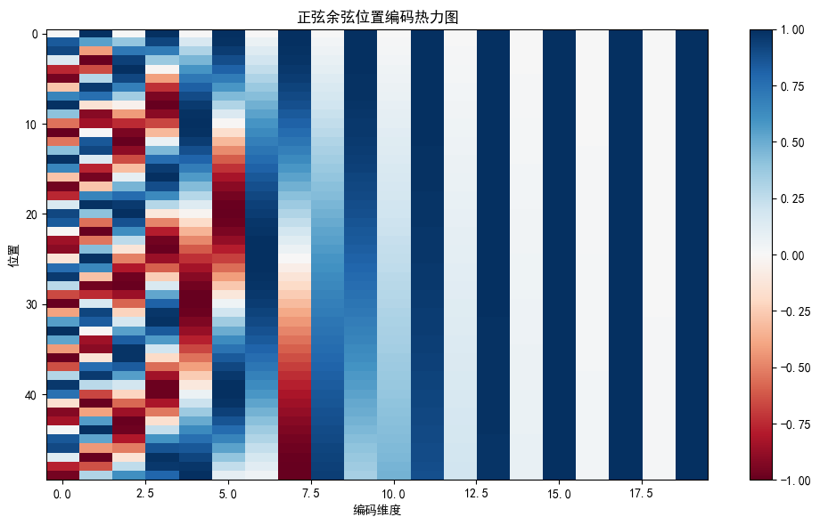
位置 0 的编码向量: [0.0, 1.0, 0.0, 1.0, 0.0, 1.0, 0.0, 1.0, 0.0, 1.0, 0.0, 1.0, 0.0, 1.0, 0.0, 1.0, 0.0, 1.0, 0.0, 1.0]
位置 1 的编码向量: [0.8414709568023682, 0.5403023362159729, 0.3876742422580719, 0.921796441078186, 0.15782663226127625, 0.9874668121337891, 0.06305388361215591, 0.9980100989341736, 0.025116223841905594, 0.9996845126152039, 0.009999833069741726, 0.9999499917030334, 0.003981061279773712, 0.9999920725822449, 0.0015848921611905098, 0.9999987483024597, 0.0006309573072940111, 0.9999998211860657, 0.0002511885541025549, 1.0]
编码矩阵形状: torch.Size([50, 20])
规律: 不同维度使用不同频率的正弦/余弦函数，低维度频率高（变化快），高维度频率低（变化慢）
========================================
作业2：TransformerEncoder
========================================
输入形状 : torch.Size([3, 10, 64])
输出形状 : torch.Size([3, 10, 64]) # 与输入形状相同
总参数量 : 66,944
========================================
作业3：不同 d_model 参数量对比
========================================
d_model= 64, nhead=4, dim_ff= 256 => 参数量: 99,968
d_model=128, nhead=8, dim_ff= 512 => 参数量: 396,544
d_model=256, nhead=8, dim_ff=1024 => 参数量: 1,579,520
结论: d_model 翻倍时，参数量约增加 4 倍（因为线性层参数量与 d_model² 成正比）